B3_flowkit · GPT-6 Astra · attempt QeA8TtQ
Batch fk1 · job fk1_B_EXP22004363_run1_221202_flowkit_gpt-6-astra · trial B_EXP22004363_run1_221202_flowki__QeA8TtQ. Long tool outputs are cut at 6,000 characters.
Score
0.29
0.29
Minutes
14.6
14.6
Agent cost
$5.48
$5.48
Steps
27
27
Screenshots / images
11
11
1
task prompt (instruction.md)
<environment_context> <cwd>/task</cwd> <shell>bash</shell> <current_date>2026-11-10</current_date> <timezone>Etc/UTC</timezone> <filesystem><workspace_roots><root>/task</root></workspace_roots><permission_profile type="disabled"><file_system type="unrestricted" /></permission_profile></filesystem> </environment_context>
2
user message
# Caspase-3/7 conditioned-media plate (H4 WT / PGRN-KO): analyse, conclude, recommend
## Goal
You are the analyst for this experiment. Analyse the 80-well plate acquired on 02-Dec-2022, answer the plan's question, and recommend the next step. The plan's question is whether WT progranulin-conditioned media can bring caspase activity in H4 PGRN-KO lines (E1, E3) back toward WT levels.
## Inputs (read-only, `/task/inputs/`)
| Path | Content |
|---|---|
| `/task/inputs/plan.md` | Notebook entry up to flow acquisition: purpose, rationale, materials, protocol, cytometer settings, plate maps and their highlight colours. |
| `/task/inputs/plate_layout.csv` | One row per FCS file: `file, well, sample, cell_line, camptothecin, conditioned_media`. `sample` is the 2022-12-02 plate-map label as written. `conditioned_media` is transcribed from that map's highlight colours (blue = WT 24hr, green = WT 48hr, none = no conditioned media). `camptothecin` is `not stated` where the plate map gives no treatment. |
| `/task/inputs/raw/` | 80 FCS 3.1 files (Attune NxT), `Caspase-assay-2-mlk_caspase_Group_<well>.fcs`, wells A1-F12 and G1-G8. |
## Channels
- FlowKit lists channels by the labels stored inside the FCS files, not by detector ID.
- These labels may be out of date.
- Use the plan's reagent list and cytometer settings to decide what each detector measured.
## Tools and rules
- **Save the gates.** Save the gating strategy as `/task/outputs/gates.xml` (see *Software*). Its gates must be the ones that produced `counts.csv`.
- **Output location.** Write every deliverable to `/task/outputs/`. Do not modify `/task/inputs/`.
- **Time budget.** About 5 hours.
## Deliverables (`/task/outputs/`)
### `gates.xml`
- Your gating strategy as GatingML 2.0, written with `flowkit.export_gatingml` (see *Software*). It must load with `flowkit.parse_gating_xml("/task/outputs/gates.xml")`.
### `counts.csv`
- **Columns, in order:** `file, well, population, role, parent, count, pct_of_parent`.
- **Rows:** one row per file per population, for all 80 files, with the same set of populations for every file.
- **`all_events` row:** one per file, with `population` = `all_events`, `role` = `other`, `parent` = `none` and `pct_of_parent` empty.
- **`role`** must be one of `cells`, `singlets`, `live`, `marker_positive`, `other`. Each of `cells`, `singlets`, `live` and `marker_positive` is used by exactly one population, and that population is the same in every file. `marker_positive` is the assay read-out population. `other` may be used by any number of populations.
- **`parent`** is the name of the parent population; use `all_events` for a top-level gate.
- **`count`** is an integer event count taken from FlowKit statistics on the saved gates.
- **`pct_of_parent`** = 100 x count / parent count.
### `flags.csv`
- **Columns, in order:** `file, well, issue_type, evidence, decision`.
- **Rows:** exactly one row per FCS file (80 rows). If a well has several issues, report the main one and mention the others in `evidence`.
- **`issue_type`** must be one of `none`, `clog`, `ran_dry`, `too_few_events`, `saturation`, `bad_control`, `mislabel`, `other`.
- **`decision`** must be one of `keep`, `keep_with_note`, `exclude`. Rows with `issue_type` = `none` must have `decision` = `keep`.
- **`evidence`** is required whenever `issue_type` is not `none`, and must cite at least one number from the data. It may be empty when `issue_type` = `none`.
### `condition_summary.csv`
- **Columns, in order:** `condition, wells, n_wells_used, mean, sd, metric_definition, normalisation_applied`.
- **`condition`** is a name you choose.
- **`wells`** lists the plate wells used, separated by `;`, e.g. `A1;D1`.
- **`n_wells_used`** is an integer.
- **`mean`** and **`sd`** are computed across the wells used. Leave `sd` empty when n = 1.
- **`metric_definition`** states the per-well metric, including numerator and denominator populations and units.
- **`normalisation_applied`** describes any normalisation, or says `none`.
### `figure.png`
The main result chart.
### `report.md`
Use these headings, in this order: `## Question`, `## Methods`, `## Results`, `## Conclusion`, `## Caveats`, `## Recommendation`.
### `answer.json`
```
{"question": str,
"comparisons": [{"comparison": str, "a": <condition>, "b": <condition>,
"direction": "increase"|"decrease"|"no_clear_change",
"magnitude": str, "confidence": "high"|"medium"|"low"}],
"overall_answer": "yes: ..." | "partial: ..." | "no: ...",
"assay_verdict": "fit_for_purpose"|"needs_optimisation"|"not_fit_for_purpose",
"next_action": <ACTION>,
"next_change": {"what": str, "from": str, "to": str, "why": str},
"excluded_wells": [well, ...],
"caveats": [str, ...]}
```
- **`comparisons`:** at least one. `a` and `b` must be `condition` values that appear in `condition_summary.csv`.
- **`direction`** describes `b` relative to `a`: `increase` means b > a.
- **`magnitude`:** give the size of the difference with a number and its unit.
- **`overall_answer`** must start with `yes:`, `partial:` or `no:`.
- **`next_action`** must be one of `proceed_as_planned`, `repeat_unchanged`, `repeat_with_change`, `optimise_reagent_or_setting`, `change_treatment_or_timing`, `switch_assay`, `stop`.
- `next_change`: the change you recommend, as an object: `what` (the step, reagent or condition to change), `from` (its value as run), `to` (the value you recommend) and `why`. Use empty strings if you recommend no change.
- **`excluded_wells`** must equal the set of wells with `decision` = `exclude` in `flags.csv`.
## Software (FlowKit version of this task)
- **Python 3 with FlowKit 1.2.3** (plus flowio, numpy, pandas, scipy, matplotlib, openpyxl) is installed. There is no graphical analysis program.
- **Load** each file with `flowkit.Sample(path)`. Build **one** `flowkit.GatingStrategy` for all wells, with `flowkit.Dimension` and `flowkit.gates.RectangleGate`, `PolygonGate` or `EllipsoidGate` (no quadrant or Boolean gates).
- **Gate names** must be valid XML IDs: letters, digits and underscores, starting with a letter (no spaces or `+`).
- **One gate per reported population**, named exactly as the population and nested under its parent population (the first population's gate sits at the root). A population's events are its own gate within its parent.
- **Compensation.** Your choice. Every gate dimension must state its `compensation_ref` (`"uncompensated"`, `"FCS"` for the file's own spillover matrix, or the id of a matrix you add to the strategy).
- **Channels.** FlowKit gate dimensions use the detector ID (`$PnN`, e.g. `BL1-A`), not the text label.
- **Transforms.** You may draw gates on transformed axes (for example `flowkit.transforms.LogicleTransform`, added with `add_transform` and referenced by `transformation_ref`).
- **Save** the strategy with `flowkit.export_gatingml(strategy, open("/task/outputs/gates.xml", "wb"))` and check that it reloads with `flowkit.parse_gating_xml`.
- **Counts.** `counts.csv` must be the counts these saved gates give on each file (`strategy.gate_sample(sample)`), with no per-well changes.
- **Looking at data.** Save plots as PNG files and open the image files to view them.
---
## How you work
You work in a **terminal** (bash, working directory `/task`).
- **Inputs** are in `/task/inputs/` (read-only). **Write every deliverable to `/task/outputs/`.** Only that folder is collected for grading.
- **Limits.** There is no limit on the number of actions; the only limit is the time budget above. Save `gates.xml` and your output files early and often.
3
agent
I’ll read the plan, map the assay dyes to their detectors, and inspect acquisition quality before setting one gating strategy for all 80 wells. Then I’ll quantify the conditioned-media effects and save the gates, results, figure, and recommendation.
tool call · exec
const r = await tools.exec_command({cmd:"pwd && rg --files -g 'AGENTS.md' -g '!inputs/raw/**' /task /installed-agent 2>/dev/null | head -80","max_output_tokens":3000});text(r);
text(ALL_TOOLS.filter(x=>/python|terminal|file|search|browse/i.test(x.name+" "+x.description)).map(x=>({name:x.name,description:x.description.slice(0,100)})).slice(0,100));
tool output
Script completed
Wall time 0.1 seconds
Output:
{"chunk_id":"37c85d","wall_time_seconds":0.0000034,"exit_code":0,"original_token_count":2,"output":"/task\n"}
[{"name":"apply_patch","description":"The `apply_patch` tool can be used to edit files. This is a FREEFORM tool, so do not wrap the patch "},{"name":"list_mcp_resource_templates","description":"Lists resource templates provided by MCP servers. Parameterized resource templates allow servers to "},{"name":"list_mcp_resources","description":"Lists resources provided by MCP servers. Resources allow servers to share data that provides context"},{"name":"view_image","description":"View a local image file from the filesystem when visual inspection is needed. Use this for images al"},{"name":"web__run","description":"Tool for accessing the internet.\n\n\n---\n\n## Examples of different commands available in this tool\n\nEx"}]tool call · exec
const results = await Promise.allSettled([
tools.exec_command({cmd:"cat inputs/plan.md","max_output_tokens":15000}),
tools.exec_command({cmd:"cat inputs/plate_layout.csv","max_output_tokens":8000}),
tools.exec_command({cmd:"ls -la /task; du -sh inputs/raw; python - <<'PY'\nimport flowkit,inspect\nprint(flowkit.__version__)\nprint(inspect.signature(flowkit.Dimension))\nprint(inspect.signature(flowkit.Sample))\nprint(inspect.signature(flowkit.gates.RectangleGate))\nPY","max_output_tokens":4000})
]);results.forEach((r,i)=>text({i,...r}));
tool output
Script completed
Wall time 1.4 seconds
Output:
{"i":0,"status":"fulfilled","value":{"chunk_id":"091bed","wall_time_seconds":0.0000035,"exit_code":0,"original_token_count":1637,"output":"# EXP22004363 | 2022.11.28 Caspase Activity Assay Dev: Progranulin Conditioned Media\n\nThis is the notebook entry text up to flow acquisition on 2022-12-02. People's names have been removed.\n\n- **Tags:** Target PGRN; Technology Assay development; Model System Cell based; Methodology Flow; Cell Type H4.\n- **Plate maps:** shown below as grids (rows A-H, columns 1-12). Empty cells are blank.\n- **Highlight colours:** the notebook encodes conditioned-media treatment by highlight colour. The colours are listed at the end.\n\n## DAY 2022-11-28\n\n### Purpose\nTo determine if progranulin conditioned media can restore wild-type levels of caspase activity in H4 GRN KO cells.\n\n### Rationale\nPrevious literature evidence suggests that applying exogenous progranulin to cells can restore molecular phenotypes in progranulin deficient lines. Our previous experiment with caspase activity on H4 GRN WT and KO cells showed that GRN KO lines had increased caspase activity. This difference was enhanced after campothesin challenge in both GRN WT and KO cells ( ). In this experiment, we will determine if applying conditioned media from WT cell lines onto KO lines can reduce caspase activity closer to WT levels.\n\n### Materials\n- H4 WT cells\n- H4 PGRN KO E1\n- H4 PGRN KO E3\n- H4 media (DMEM + 10% FBS)\n- CellEvent Caspase-3/7 Green Flow Cytometry Assay Kit\n- Camptothecin\n- Plate 10k cells according to plate:\n\n| | 1 | 2 | 3 | 4 | 5 | 6 | 7 | 8 | 9 | 10 | 11 | 12 |\n|---|---|---|---|---|---|---|---|---|---|---|---|---|\n| A | WT | WT | WT | WT | WT | WT | WT | WT | WT | | | |\n| B | WT | WT | WT | WT | WT | WT | WT | WT | WT | | | |\n| C | WT | WT | WT | WT | WT | WT | WT | WT | WT | | | |\n| D | WT | WT | WT | WT | WT | WT | WT | WT | WT | | | |\n| E | E1 | E1 | E1 | E1 | E1 | E1 | E1 | E1 | E1 | | | |\n| F | E3 | E3 | E3 | E3 | E3 | E3 | E3 | E3 | E3 | | | |\n| G | | | | | | | | | Serum free media | | | |\n| H | 24 hr | | | | 48 hr | | | | | | | |\n\n- WT-330K for 33 wells-resuspend in 3300mL\n- E1 and E3-90K for 9 wells-resuspend in 900uL\n\n## DAY 2022-11-29\n- Harvest media after 24 and 48 hrs and place in 4 C until ready to use.\n\n## DAY 2022-11-30\n- Plate cells according to the following plate map and incubate at 37C:\n\n| | 1 | 2 | 3 | 4 | 5 | 6 | 7 | 8 | 9 | 10 | 11 | 12 |\n|---|---|---|---|---|---|---|---|---|---|---|---|---|\n| A | WT | WT | WT | WT | WT | WT | WT | WT | WT | WT | WT | WT |\n| B | E1 | E1 | E1 | E1 | E1 | E1 | E1 | E1 | E1 | E1 | E1 | E1 |\n| C | E3 | E3 | E3 | E3 | E3 | E3 | E3 | E3 | E3 | E3 | E3 | E3 |\n| D | WT | WT | WT | WT | WT | WT | WT | WT | WT | WT | WT | WT |\n| E | E1 | E1 | E1 | E1 | E1 | E1 | E1 | E1 | E1 | E1 | E1 | E1 |\n| F | E3 | E3 | E3 | E3 | E3 | E3 | E3 | E3 | E3 | E3 | E3 | E3 |\n| G | WT no treatment | WT no treatment | E3 no treatment | E3 no treatment | | | | | | | | |\n| H | E1 no treatment | E1 no treatment | WT (flow control) | WT (flow control) | | | | | | | | |\n\n## DAY 2022-12-01\n- Gently wash cells with DMEM.\n- Replace media with conditioned media collected previously. Conditioned media added at 9AM\n\n## DAY 2022-12-02\n- After 24 hours, add campthothesin according to the plate map:\n\n| | 1 | 2 | 3 | 4 | 5 | 6 | 7 | 8 | 9 | 10 | 11 | 12 |\n|---|---|---|---|---|---|---|---|---|---|---|---|---|\n| A | WT 10uM | WT 5uM | WT 2uM | WT DMSO | WT 10uM | WT 5uM | WT 2uM | WT DMSO | WT 10uM | WT 5uM | WT 2uM | WT DMSO |\n| B | E1 10uM | E1 5uM | E1 2uM | E1 DMSO | E1 10uM | E1 5uM | E1 2uM | E1 DMSO | E1 10uM | E1 5uM | E1 2uM | E1 DMSO |\n| C | E3 10uM | E3 5uM | E3 2uM | E3 DMSO | E3 10uM | E3 5uM | E3 2uM | E3 DMSO | E3 10uM | E3 5uM | E3 2uM | E3 DMSO |\n| D | WT 10uM | WT 5uM | WT 2uM | WT DMSO | WT 10uM | WT 5uM | WT 2uM | WT DMSO | WT 10uM | WT 5uM | WT 2uM | WT DMSO |\n| E | E1 10uM | E1 5uM | E1 2uM | E1 DMSO | E1 10uM | E1 5uM | E1 2uM | E1 DMSO | E1 10uM | E1 5uM | E1 2uM | E1 DMSO |\n| F | E3 10uM | E3 5uM | E3 2uM | E3 DMSO | E3 10uM | E3 5uM | E3 2uM | E3 DMSO | E3 10uM | E3 5uM | E3 2uM | E3 DMSO |\n| G | WT no treatment (no stain) | WT no treatment | E3 no treatment | E3 no treatment | E1 no treatment | E1 no treatment | WT (caspase stain only) | WT (L/D stain only) | | | | |\n| H | | | | | | | | | | | | |\n\n- Blue highlight=treated with WT 24hr conditoned media\n- Green highlight= treated with WT 48hr conditioned media\n- No highlight= no conditioned media treatment\n- Incubate and run flow.\n- Aspirate media and wash with PBS\n- Add 150uL trypsin incubate for 5min\n- Add 75uL FBS and collect into 96w round bottom plate\n- spin down 200xg for 5min\n- Add 200uL of Cell Event Caspase 3/7 Detection reagent (1:1000) in flow staining buffer. Incubate for 30min at 37C\n- Prepare SYTOX AAdvanced Dead Cell Stain at 100uM concentration by adding 1000uL DMSO to stain. Mix well\n- During the final 5 minutes of 30min Caspase incubation add 2uL of the 100uM Dead Cell stain (final concentration of 1uM)\n- Analyze the samples without fixing.\n\nFlow cytometer settings: FSC-20; SSC-290; BL1 (caspase)-225, BL2 (AAddvanced Dead Cell Stain)-350\n\n## Plate-map cell colours (from the notebook's highlighting; the plain-text maps above drop colour)\n\n### Plate map of 2022-11-28\n- row A: WT [light cyan #C2EDF8] x8 (cols 1-8) | WT (col 9, no highlight) | - | - | -\n- row B: WT [light cyan #C2EDF8] x8 (cols 1-8) | WT (col 9, no highlight) | - | - | -\n- row C: WT [light cyan #C2EDF8] x8 (cols 1-8) | WT (col 9, no highlight) | - | - | -\n- row D: WT [light green #E8F9CF] x8 (cols 1-8) | WT (col 9, no highlight) | - | - | -\n- row E: E1 [light green #E8F9CF] x8 (cols 1-8) | E1 (col 9, no highlight) | - | - | -\n- row F: E3 [light green #E8F9CF] x8 (cols 1-8) | E3 (col 9, no highlight) | - | - | -\n- row G: cols 1-8 empty | Serum free media (col 9) | - | - | -\n- r
… [8,741 more characters not shown]tool call · exec
const results = await Promise.allSettled([
tools.exec_command({cmd:"python - <<'PY'\nimport flowkit as fk,inspect\ns=fk.Sample('/task/inputs/raw/Caspase-assay-2-mlk_caspase_Group_G1.fcs')\nprint(s)\nprint(s.channels.to_string())\nprint(s.metadata)\nprint(s.get_events(source='raw')[:5])\nfor x in ['get_gate_count','get_gate_relative_percent','get_gate_absolute_percent']:\n print(x)\nprint(inspect.signature(fk.GatingStrategy.gate_sample))\nprint(inspect.signature(fk.gates.PolygonGate))\nprint(inspect.signature(fk.Matrix))\nPY","max_output_tokens":7000}),
tools.web__run({search_query:[{q:'site.thermofisher.com CellEvent Caspase-3/7 Green Flow Cytometry Assay Kit SYTOX AADvanced 488 574 530 protocol'}],response_length:"long"})
]);results.forEach((r,i)=>text({i,...r}));
tool output
Script completed
Wall time 0.8 seconds
Output:
{"i":0,"status":"fulfilled","value":{"chunk_id":"075226","wall_time_seconds":0.577747386,"exit_code":0,"original_token_count":1454,"output":"Sample(v3.1, G1.fcs, 13 channels, 26210 events)\n channel_number pnn pns png pne pnr\n0 1 Time Time 1.0 (0.0, 0.0) 67108864.0\n1 2 FSC-A FSC-A 1.0 (0.0, 0.0) 1048576.0\n2 3 SSC-A SSC-A 1.0 (0.0, 0.0) 1048576.0\n3 4 BL1-A AAV-GFP-GFP-A 1.0 (0.0, 0.0) 1048576.0\n4 5 BL2-A AAdvanced livedead-A 1.0 (0.0, 0.0) 1048576.0\n5 6 FSC-H FSC-H 1.0 (0.0, 0.0) 1048576.0\n6 7 SSC-H SSC-H 1.0 (0.0, 0.0) 1048576.0\n7 8 BL1-H AAV-GFP-GFP-H 1.0 (0.0, 0.0) 1048576.0\n8 9 BL2-H AAdvanced livedead-H 1.0 (0.0, 0.0) 1048576.0\n9 10 FSC-W FSC-W 1.0 (0.0, 0.0) 1024.0\n10 11 SSC-W SSC-W 1.0 (0.0, 0.0) 1024.0\n11 12 BL1-W AAV-GFP-GFP-W 1.0 (0.0, 0.0) 1024.0\n12 13 BL2-W AAdvanced livedead-W 1.0 (0.0, 0.0) 1024.0\n{'par': '13', 'tot': '26210', 'mode': 'L', 'datatype': 'F', 'byteord': '1,2,3,4', 'p1f': 'NA', 'p1l': 'NA', 'p1s': 'Time', 'p1v': 'NA', 'p1n': 'Time', 'p1b': '32', 'p1r': '67108864', 'p1e': '0,0', 'p2f': 'NA', 'p2l': '488', 'p2s': 'FSC-A', 'p2v': '20', 'p2n': 'FSC-A', 'p2b': '32', 'p2r': '1048576', 'p2e': '0,0', 'p3f': 'NA', 'p3l': '488', 'p3s': 'SSC-A', 'p3v': '290', 'p3n': 'SSC-A', 'p3b': '32', 'p3r': '1048576', 'p3e': '0,0', 'p4f': 'NA', 'p4l': '488', 'p4s': 'AAV-GFP-GFP-A', 'p4v': '225', 'p4n': 'BL1-A', 'p4b': '32', 'p4r': '1048576', 'p4e': '0,0', 'p5f': 'NA', 'p5l': '488', 'p5s': 'AAdvanced livedead-A', 'p5v': '350', 'p5n': 'BL2-A', 'p5b': '32', 'p5r': '1048576', 'p5e': '0,0', 'p6f': 'NA', 'p6l': '488', 'p6s': 'FSC-H', 'p6v': '20', 'p6n': 'FSC-H', 'p6b': '32', 'p6r': '1048576', 'p6e': '0,0', 'p7f': 'NA', 'p7l': '488', 'p7s': 'SSC-H', 'p7v': '290', 'p7n': 'SSC-H', 'p7b': '32', 'p7r': '1048576', 'p7e': '0,0', 'p8f': 'NA', 'p8l': '488', 'p8s': 'AAV-GFP-GFP-H', 'p8v': '225', 'p8n': 'BL1-H', 'p8b': '32', 'p8r': '1048576', 'p8e': '0,0', 'p9f': 'NA', 'p9l': '488', 'p9s': 'AAdvanced livedead-H', 'p9v': '350', 'p9n': 'BL2-H', 'p9b': '32', 'p9r': '1048576', 'p9e': '0,0', 'p10f': 'NA', 'p10l': '488', 'p10s': 'FSC-W', 'p10v': '20', 'p10n': 'FSC-W', 'p10b': '32', 'p10r': '1024', 'p10e': '0,0', 'p11f': 'NA', 'p11l': '488', 'p11s': 'SSC-W', 'p11v': '290', 'p11n': 'SSC-W', 'p11b': '32', 'p11r': '1024', 'p11e': '0,0', 'p12f': 'NA', 'p12l': '488', 'p12s': 'AAV-GFP-GFP-W', 'p12v': '225', 'p12n': 'BL1-W', 'p12b': '32', 'p12r': '1024', 'p12e': '0,0', 'p13f': 'NA', 'p13l': '488', 'p13s': 'AAdvanced livedead-W', 'p13v': '350', 'p13n': 'BL2-W', 'p13b': '32', 'p13r': '1024', 'p13e': '0,0', 'cyt': '0A29009 Attune NxT Acoustic Focusing Cytometer (Lasers: BRV6Y)', 'sys': 'SEA11065ATTUNE Microsoft Windows 10 Enterprise LTSC', 'spillover': '6,BL1-A,BL2-A,BL1-H,BL2-H,BL1-W,BL2-W,1.000000,0.000000,0.000000,0.000000,0.000000,0.000000,0.000000,1.000000,0.000000,0.000000,0.000000,0.000000,0.000000,0.000000,1.000000,0.000000,0.000000,0.000000,0.000000,0.000000,0.000000,1.000000,0.000000,0.000000,0.000000,0.000000,0.000000,0.000000,1.000000,0.000000,0.000000,0.000000,0.000000,0.000000,0.000000,1.000000', 'btim': '15:26:08', 'cells': 'NA', 'com': 'NA', 'cytsn': '2AFC228071019', 'date': '02-Dec-2022', 'etim': '15:26:25', 'exp': 'NA', 'fil': 'G1.fcs', 'inst': 'NA', 'originality': 'Original', 'lost': '0', 'op': 'Jeff Huang', 'plateid': 'NA', 'platename': 'Caspase-assay-2-mlk', 'proj': 'caspase', 'smno': 'Group', 'src': 'NA', 'timestep': '0.001', 'vol': '140000', 'wellid': 'G1', '#coincidentcount': '435', '#flowrate': '500', '#laser1asf': '1.05', '#laser1color': 'Blue', '#laser1delay': '1100', '#laser2asf': '1.09', '#laser2color': 'Red', '#laser2delay': '1514', '#laser3asf': '1.02', '#laser3color': 'Violet', '#laser3delay': '702', '#laser4asf': '0.98', '#laser4color': 'Yellow', '#laser4delay': '275', '#laserconfig': 'BRV6Y', '#p12label': 'GFP', '#p12target': 'AAV-GFP', '#p13target': 'AAdvanced livedead', '#p1label': 'NA', '#p1target': 'NA', '#p4label': 'GFP', '#p4target': 'AAV-GFP', '#p5target': 'AAdvanced livedead', '#p8label': 'GFP', '#p8target': 'AAV-GFP', '#p9target': 'AAdvanced livedead', '#ptdate': '02-Dec-2022', '#ptresult': 'Pass', '#tr1': 'OR_FSC,25000', '#widththreshold': '1000', '#winext': '0', 'hostid': 'SEA11065ATTUNE', 'begindata': '000000008192', 'enddata': '000001371111', 'nextdata': '000000000000', 'beginstext': '000000000000', 'endstext': '000000000000', 'beginanalysis': '000000000000', 'endanalysis': '000000000000'}\n[[ 1.50000e-02 3.17326e+05 2.05323e+05 7.00000e+00 2.22000e+02\n 1.96007e+05 1.28119e+05 8.30000e+01 1.93000e+02 1.45000e+02\n 1.25000e+02 0.00000e+00 0.00000e+00]\n [ 1.90000e-02 3.29531e+05 2.20419e+05 7.30000e+01 3.21000e+02\n 1.59067e+05 1.22057e+05 9.10000e+01 2.72000e+02 1.54000e+02\n 1.41000e+02 0.00000e+00 0.00000e+00]\n [ 2.00000e-02 3.67333e+05 1.52360e+05 -1.00000e+00 4.25000e+02\n 2.27103e+05 9.73270e+04 3.30000e+01 2.95000e+02 1.45000e+02\n 1.22000e+02 0.00000e+00 0.00000e+00]\n [ 2.00000e-02 3.89115e+05 1.79313e+05 1.22000e+02 5.30000e+01\n 1.98357e+05 1.03877e+05 6.90000e+01 1.38000e+02 1.48000e+02\n 1.29000e+02 0.00000e+00 0.00000e+00]\n [ 2.20000e-02 5.15957e+05 1.73588e+05 3.00000e+01 5.96000e+02\n 3.20675e+05 1.10289e+05 1.08000e+02 2.48000e+02 1.28000e+02\n 1.26000e+02 0.00000e+00 0.00000e+00]]\nget_gate_count\nget_gate_relative_percent\nget_gate_absolute_percent\n(self, sample, cache_events=False, verbose=False)\n(gate_name, dimensions, vertices, use_complement=False)\n(spill_data_or_file, detectors,
… [28,210 more characters not shown]tool call · exec
text(await tools.apply_patch("*** Begin Patch\n*** Add File: /task/outputs/inspect_data.py\n+\"\"\"Initial read-only inspection; all generated artifacts stay in outputs.\"\"\"\n+from pathlib import Path\n+import json\n+import numpy as np\n+import pandas as pd\n+import matplotlib\n+matplotlib.use('Agg')\n+import matplotlib.pyplot as plt\n+from matplotlib.colors import LogNorm\n+import flowkit as fk\n+\n+ROOT = Path('/task')\n+OUT = ROOT / 'outputs'\n+layout = pd.read_csv(ROOT / 'inputs/plate_layout.csv')\n+samples = {}\n+rows = []\n+for rec in layout.to_dict('records'):\n+ s = fk.Sample(str(ROOT / 'inputs/raw' / rec['file']))\n+ x = s.get_events(source='raw')\n+ samples[rec['well']] = (s, x)\n+ row = dict(rec, events=len(x), start=s.metadata['btim'], end=s.metadata['etim'],\n+ time_start=x[0, 0], time_end=x[-1, 0], duration=x[-1, 0]-x[0, 0],\n+ lost=s.metadata.get('lost'), coincident=s.metadata.get('#coincidentcount'),\n+ well_metadata=s.metadata.get('wellid'), spillover=s.metadata.get('spillover'))\n+ for ch in ['FSC-A','SSC-A','FSC-H','FSC-W','BL1-A','BL2-A']:\n+ idx = s.pnn_labels.index(ch)\n+ for q in [0,.01,.1,.25,.5,.75,.9,.99,1]:\n+ row[f'{ch}_q{q:g}'] = np.quantile(x[:,idx],q)\n+ row[f'{ch}_pct_saturated'] = 100*np.mean(x[:,idx]>=1048575)\n+ rows.append(row)\n+pd.DataFrame(rows).to_csv(OUT/'raw_qc.csv',index=False)\n+\n+selected = ['G1','G2','G3','G5','G7','G8','A9','B9','C9','D12','E12','F12']\n+fig, axs = plt.subplots(len(selected),4,figsize=(16,36))\n+for i,well in enumerate(selected):\n+ s,x = samples[well]\n+ for j,(c1,c2,scale) in enumerate([('FSC-A','SSC-A','lin'),('FSC-A','FSC-H','lin'),\n+ ('BL1-A','BL2-A','asinh'),('Time','FSC-A','time')]):\n+ ax=axs[i,j]\n+ a,b=x[:,s.pnn_labels.index(c1)],x[:,s.pnn_labels.index(c2)]\n+ if scale=='asinh':\n+ a,b=np.arcsinh(a/150),np.arcsinh(b/150)\n+ ax.set_xlim(-2,10);ax.set_ylim(-2,10)\n+ elif scale=='lin':\n+ a,b=a/1e3,b/1e3\n+ ax.set_xlim(0,1050);ax.set_ylim(0,1050)\n+ else:\n+ b=b/1e3\n+ ax.hist2d(a,b,bins=120,norm=LogNorm(),cmap='viridis')\n+ ax.set_xlabel(c1 + (' /1000' if scale=='lin' else ''))\n+ ax.set_ylabel(c2)\n+ ax.set_title(f'{well} ({len(x):,} events)')\n+fig.tight_layout()\n+fig.savefig(OUT/'inspection_selected.png',dpi=130)\n+plt.close(fig)\n+\n+for kind in ['fluorescence','scatter','time']:\n+ fig, axs = plt.subplots(7,12,figsize=(30,18))\n+ for ax in axs.ravel():ax.set_visible(False)\n+ for r in layout.to_dict('records'):\n+ w=r['well'];ax=axs[ord(w[0])-65,int(w[1:])-1];ax.set_visible(True)\n+ s,x=samples[w]\n+ if kind=='fluorescence':\n+ a,b=np.arcsinh(x[:,3]/150),np.arcsinh(x[:,4]/150)\n+ ax.hist2d(a,b,bins=60,range=[[-1,10],[-1,10]],norm=LogNorm(),cmap='viridis')\n+ elif kind=='scatter':\n+ ax.hist2d(x[:,1]/1e3,x[:,2]/1e3,bins=60,range=[[0,1050],[0,1050]],norm=LogNorm(),cmap='viridis')\n+ else:\n+ ax.hist(x[:,0],bins=np.linspace(0,17,35),color='steelblue')\n+ ax.set_xlim(0,17)\n+ ax.set_title(f'{w}: {len(x):,}',fontsize=9)\n+ ax.tick_params(labelsize=6)\n+ fig.suptitle(kind+': all raw events',fontsize=16)\n+ fig.tight_layout()\n+ fig.savefig(OUT/f'inspection_{kind}.png',dpi=150)\n+ plt.close(fig)\n+print(pd.DataFrame(rows)[['well','events','duration','FSC-A_q0.5','BL1-A_q0.5','BL1-A_q0.99','BL2-A_q0.5','BL2-A_q0.99']].to_string(index=False))\n*** End Patch"));
text(await tools.exec_command({cmd:"python outputs/inspect_data.py","yield_time_ms":1000,"max_output_tokens":1000}));
tool output
Script completed
Wall time 1.2 seconds
Output:
{}
{"chunk_id":"077193","wall_time_seconds":1.001167715,"session_id":31758,"original_token_count":0,"output":""}tool call · exec
const r=await tools.exec_command({cmd:"python - <<'PY'\nimport pandas as pd\nx=pd.read_csv('outputs/raw_qc.csv')\nprint(x[['well','events','duration','FSC-A_q0.5','BL1-A_q0.5','BL1-A_q0.99','BL2-A_q0.5','BL2-A_q0.99']].to_string(index=False))\nprint('Saturation maxima',x.filter(like='pct_saturated').max().to_string())\nPY","max_output_tokens":6000});text(r);
text(await tools.web__run({search_query:[{q:'site.thermofisher.com Attune NxT BRV6Y BL1 BL2 574 26 BL3 695 40 filter configuration'}],response_length:"long"}));
tool output
Script completed
Wall time 1.6 seconds
Output:
{"chunk_id":"f49efc","wall_time_seconds":0.056051065,"exit_code":0,"original_token_count":1774,"output":"well events duration FSC-A_q0.5 BL1-A_q0.5 BL1-A_q0.99 BL2-A_q0.5 BL2-A_q0.99\n A1 31328 15.966 273564.0 174.0 5281.46 874.0 195360.29\n A2 40169 16.691 297602.0 185.0 5221.32 833.0 150223.24\n A3 47337 16.836 267990.0 185.0 4982.92 767.0 130902.48\n A4 33079 16.618 282823.0 225.0 7231.10 1066.0 235790.54\n A5 34963 16.734 274442.0 194.0 5676.32 897.0 176735.92\n A6 33431 15.646 350928.0 206.0 5617.70 1392.0 148823.90\n A7 36445 16.826 341038.0 208.0 5478.24 1311.0 137492.40\n A8 22867 15.817 353126.0 221.0 7524.68 1593.0 283707.04\n A9 40034 16.657 250810.0 174.0 6256.03 751.0 160713.16\n A10 42298 16.633 276477.5 178.0 5793.12 771.0 146335.11\n A11 43376 16.607 273871.5 183.0 6005.75 741.0 155472.25\n A12 30724 15.946 253281.5 189.0 8237.39 899.0 214389.48\n B1 18757 16.688 285646.0 1102.0 13087.80 5301.0 292202.96\n B2 32477 15.813 301651.0 928.0 9277.60 3883.0 137745.96\n B3 40067 16.724 294948.0 1012.0 10700.42 4334.0 145677.06\n B4 19965 15.869 262965.0 1002.0 23698.76 4744.0 496570.92\n B5 17852 16.759 287369.0 1139.0 10309.35 5880.5 203921.62\n B6 31705 16.641 295886.0 980.0 9825.84 4650.0 127982.40\n B7 35417 15.871 282222.0 1023.0 10095.56 5036.0 133892.12\n B8 26222 16.704 270288.5 890.0 12550.16 4399.0 219341.54\n B9 34411 15.795 270844.0 380.0 9728.60 1780.0 126473.50\n B10 40098 16.684 275149.0 383.0 8360.15 1692.0 106522.73\n B11 41005 16.815 242468.0 401.0 6618.80 1863.0 65377.96\n B12 31680 15.927 177678.0 264.0 6551.52 1224.5 108817.20\n C1 17681 16.509 361736.0 551.0 16077.20 4567.0 250506.80\n C2 25455 16.774 231796.0 357.0 13205.92 2137.0 195926.86\n C3 21098 15.888 376067.5 426.5 12389.12 3269.5 200352.29\n C4 18113 16.807 254182.0 417.0 16220.56 2907.0 236718.00\n C5 18729 16.811 217504.0 350.0 14898.88 2361.0 234599.68\n C6 21716 16.456 261576.0 348.0 10966.40 2305.5 144429.70\n C7 22874 16.578 287820.0 311.0 8413.94 1957.5 98729.91\n C8 18604 16.588 253137.5 337.0 10141.31 2284.0 208819.46\n C9 22962 15.823 349618.0 238.0 6529.75 1324.0 158329.15\n C10 15794 16.519 401110.5 237.0 6132.84 1220.0 126741.40\n C11 19854 16.463 411669.0 244.0 6664.70 1167.0 122842.97\n C12 23104 16.712 336460.5 218.0 6313.64 1138.0 114912.08\n D1 29965 16.608 276411.0 231.0 9422.96 1055.0 161781.52\n D2 42557 16.807 282603.0 220.0 8496.84 982.0 142601.12\n D3 44711 15.930 283107.0 235.0 7530.50 1005.0 117307.00\n D4 26104 16.783 285746.5 270.0 15214.70 1479.0 363313.44\n D5 28348 16.753 275149.0 220.0 9675.77 1124.5 202230.75\n D6 32268 16.494 279475.0 220.0 8394.23 1047.0 149135.12\n D7 38003 16.359 272353.0 228.0 7776.88 1117.0 117964.94\n D8 27787 16.799 261766.0 257.0 16713.66 1316.0 316496.34\n D9 35585 16.711 245328.0 202.0 9698.96 1005.0 163780.32\n D10 38425 16.145 262379.0 204.0 7639.52 890.0 140687.04\n D11 43319 16.321 253575.0 204.0 6869.94 870.0 121685.14\n D12 28999 16.752 287319.0 178.0 6146.72 772.0 196490.24\n E1 18885 16.715 295206.0 1144.0 13995.80 5929.0 213216.28\n E2 35801 16.490 287628.0 1400.0 13136.00 6323.0 137888.00\n E3 39231 16.079 281535.0 1455.0 14455.90 6783.0 142835.80\n E4 18739 15.947 282689.0 1937.0 31919.20 9212.0 490312.30\n E5 18850 16.583 268437.0 1707.5 23533.65 8762.5 318905.21\n E6 32342 16.698 264674.5 1374.0 14089.67 6706.0 150094.54\n E7 38310 16.799 263604.5 1117.0 12852.11 5590.0 119099.21\n E8 15706 15.859 244415.5 1398.0 21703.80 7804.0 446104.65\n E9 29597 15.895 231468.0 406.0 12616.16 2116.0 186635.44\n E10 41604 16.763 254140.5 397.0 14873.85 1810.5 135371.26\n E11 43387 16.673 211788.0 441.0 11022.96 1923.0 77922.16\n E12 26670 16.796 163752.5 263.0 12334.47 1159.5 219998.57\n F1 11614 16.677 313812.0 415.5 15258.44 3115.0 260365.86\n F2 18268 15.904 166801.0 331.0 14780.81 1825.0 236965.31\n F3 19551 15.926 256561.0 346.0 14213.00 2012.0 211940.50\n F4 11834 15.803 209894.5 446.5 20857.36 3326.0 307459.20\n F5 14031 16.686 183947.0 333.0 15269.90 2202.0 231809.40\n F6 14662 15.782 179304.5 332.0 14503.36 2194.0 200149.37\n F7 19376 16.704 229399.5 364.0 16615.50 2329.0 205021.75\
… [22,570 more characters not shown]8
agent
The plan identifies BL1 as the caspase channel despite its stored “AAV-GFP” label; BL2 is the dead-cell stain. The final plate map also differs from the earlier map, so I’m using the supplied 02-Dec layout. All wells contain thousands of events; I’m checking scatter clipping, acquisition stability, and the single-stain controls before setting the gates.
tool call · exec
text(await tools.write_stdin({session_id:31758,chars:"","yield_time_ms":1000,"max_output_tokens":3000}));
const r=await tools.view_image({path:"/task/outputs/inspection_selected.png"});image(r.image_url);
tool output
Script completed Wall time 0.9 seconds Output:
{"chunk_id":"0e62e9","wall_time_seconds":0.850701891,"exit_code":0,"original_token_count":1722,"output":"well events duration FSC-A_q0.5 BL1-A_q0.5 BL1-A_q0.99 BL2-A_q0.5 BL2-A_q0.99\n A1 31328 15.966 273564.0 174.0 5281.46 874.0 195360.29\n A2 40169 16.691 297602.0 185.0 5221.32 833.0 150223.24\n A3 47337 16.836 267990.0 185.0 4982.92 767.0 130902.48\n A4 33079 16.618 282823.0 225.0 7231.10 1066.0 235790.54\n A5 34963 16.734 274442.0 194.0 5676.32 897.0 176735.92\n A6 33431 15.646 350928.0 206.0 5617.70 1392.0 148823.90\n A7 36445 16.826 341038.0 208.0 5478.24 1311.0 137492.40\n A8 22867 15.817 353126.0 221.0 7524.68 1593.0 283707.04\n A9 40034 16.657 250810.0 174.0 6256.03 751.0 160713.16\n A10 42298 16.633 276477.5 178.0 5793.12 771.0 146335.11\n A11 43376 16.607 273871.5 183.0 6005.75 741.0 155472.25\n A12 30724 15.946 253281.5 189.0 8237.39 899.0 214389.48\n B1 18757 16.688 285646.0 1102.0 13087.80 5301.0 292202.96\n B2 32477 15.813 301651.0 928.0 9277.60 3883.0 137745.96\n B3 40067 16.724 294948.0 1012.0 10700.42 4334.0 145677.06\n B4 19965 15.869 262965.0 1002.0 23698.76 4744.0 496570.92\n B5 17852 16.759 287369.0 1139.0 10309.35 5880.5 203921.62\n B6 31705 16.641 295886.0 980.0 9825.84 4650.0 127982.40\n B7 35417 15.871 282222.0 1023.0 10095.56 5036.0 133892.12\n B8 26222 16.704 270288.5 890.0 12550.16 4399.0 219341.54\n B9 34411 15.795 270844.0 380.0 9728.60 1780.0 126473.50\n B10 40098 16.684 275149.0 383.0 8360.15 1692.0 106522.73\n B11 41005 16.815 242468.0 401.0 6618.80 1863.0 65377.96\n B12 31680 15.927 177678.0 264.0 6551.52 1224.5 108817.20\n C1 17681 16.509 361736.0 551.0 16077.20 4567.0 250506.80\n C2 25455 16.774 231796.0 357.0 13205.92 2137.0 195926.86\n C3 21098 15.888 376067.5 426.5 12389.12 3269.5 200352.29\n C4 18113 16.807 254182.0 417.0 16220.56 2907.0 236718.00\n C5 18729 16.811 217504.0 350.0 14898.88 2361.0 234599.68\n C6 21716 16.456 261576.0 348.0 10966.40 2305.5 144429.70\n C7 22874 16.578 287820.0 311.0 8413.94 1957.5 98729.91\n C8 18604 16.588 253137.5 337.0 10141.31 2284.0 208819.46\n C9 22962 15.823 349618.0 238.0 6529.75 1324.0 158329.15\n C10 15794 16.519 401110.5 237.0 6132.84 1220.0 126741.40\n C11 19854 16.463 411669.0 244.0 6664.70 1167.0 122842.97\n C12 23104 16.712 336460.5 218.0 6313.64 1138.0 114912.08\n D1 29965 16.608 276411.0 231.0 9422.96 1055.0 161781.52\n D2 42557 16.807 282603.0 220.0 8496.84 982.0 142601.12\n D3 44711 15.930 283107.0 235.0 7530.50 1005.0 117307.00\n D4 26104 16.783 285746.5 270.0 15214.70 1479.0 363313.44\n D5 28348 16.753 275149.0 220.0 9675.77 1124.5 202230.75\n D6 32268 16.494 279475.0 220.0 8394.23 1047.0 149135.12\n D7 38003 16.359 272353.0 228.0 7776.88 1117.0 117964.94\n D8 27787 16.799 261766.0 257.0 16713.66 1316.0 316496.34\n D9 35585 16.711 245328.0 202.0 9698.96 1005.0 163780.32\n D10 38425 16.145 262379.0 204.0 7639.52 890.0 140687.04\n D11 43319 16.321 253575.0 204.0 6869.94 870.0 121685.14\n D12 28999 16.752 287319.0 178.0 6146.72 772.0 196490.24\n E1 18885 16.715 295206.0 1144.0 13995.80 5929.0 213216.28\n E2 35801 16.490 287628.0 1400.0 13136.00 6323.0 137888.00\n E3 39231 16.079 281535.0 1455.0 14455.90 6783.0 142835.80\n E4 18739 15.947 282689.0 1937.0 31919.20 9212.0 490312.30\n E5 18850 16.583 268437.0 1707.5 23533.65 8762.5 318905.21\n E6 32342 16.698 264674.5 1374.0 14089.67 6706.0 150094.54\n E7 38310 16.799 263604.5 1117.0 12852.11 5590.0 119099.21\n E8 15706 15.859 244415.5 1398.0 21703.80 7804.0 446104.65\n E9 29597 15.895 231468.0 406.0 12616.16 2116.0 186635.44\n E10 41604 16.763 254140.5 397.0 14873.85 1810.5 135371.26\n E11 43387 16.673 211788.0 441.0 11022.96 1923.0 77922.16\n E12 26670 16.796 163752.5 263.0 12334.47 1159.5 219998.57\n F1 11614 16.677 313812.0 415.5 15258.44 3115.0 260365.86\n F2 18268 15.904 166801.0 331.0 14780.81 1825.0 236965.31\n F3 19551 15.926 256561.0 346.0 14213.00 2012.0 211940.50\n F4 11834 15.803 209894.5 446.5 20857.36 3326.0 307459.20\n F5 14031 16.686 183947.0 333.0 15269.90 2202.0 231809.40\n F6 14662 15.782 179304.5 332.0 14503.36 2194.0 200149.37\n F7 19376 16.704 229399.5 364.0 16615.50 2329.0 205021.75\n F8 13717 16.793 387049.0 320.0
… [1,073 more characters not shown]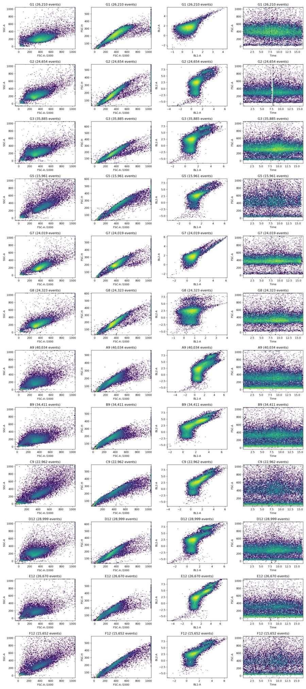
tool call · exec
const r=await tools.view_image({path:"/task/outputs/inspection_time.png"});image(r.image_url);
const q=await tools.view_image({path:"/task/outputs/inspection_scatter.png"});image(q.image_url);
tool output
Script completed Wall time 0.1 seconds Output:
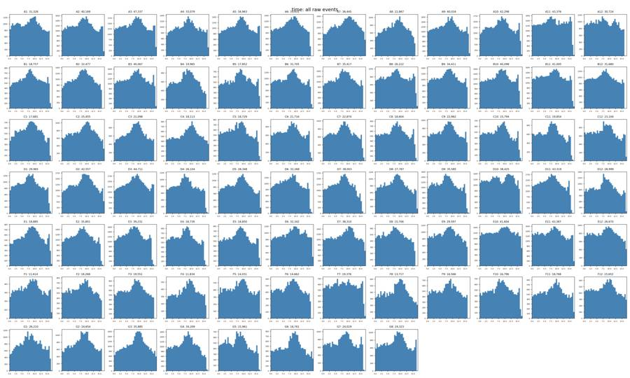
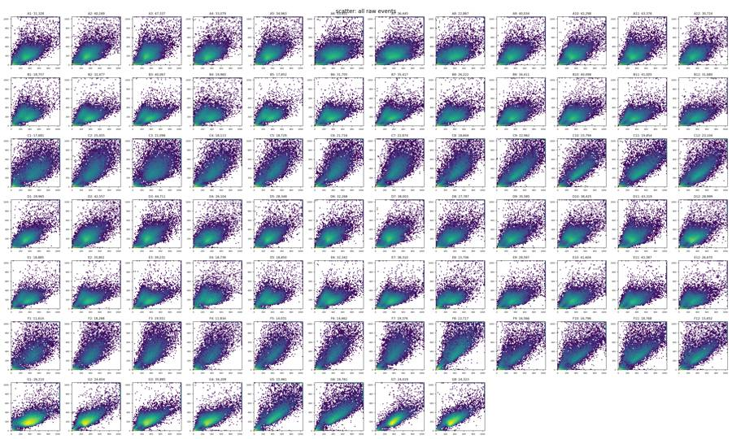
tool call · exec
text(await tools.exec_command({cmd:"python - <<'PY'\nimport flowkit as fk,numpy as np,pandas as pd\nwells=['G1','G7','G8','A9','B9','C9','B1','E4','F9']\nfor w in wells:\n s=fk.Sample(f'inputs/raw/Caspase-assay-2-mlk_caspase_Group_{w}.fcs');x=s.get_events(source='raw')\n keep=(x[:,1]>60000)&(x[:,2]>40000)&(x[:,1]<1048575)&(x[:,2]<1048575)\n a=x[keep]\n print(w,'cells',len(a),'H/A',np.round(np.quantile(a[:,5]/a[:,1],[.01,.05,.1,.25,.5,.75,.9,.95,.99]),3),'W',np.quantile(a[:,9],[.01,.05,.1,.25,.5,.75,.9,.95,.99]))\nPY","max_output_tokens":3000}));
text(await tools.apply_patch("*** Begin Patch\n*** Add File: /task/outputs/gate_exploration.py\n+from pathlib import Path\n+import numpy as np\n+import pandas as pd\n+import matplotlib\n+matplotlib.use('Agg')\n+import matplotlib.pyplot as plt\n+from matplotlib.colors import LogNorm\n+import flowkit as fk\n+\n+out=Path('/task/outputs')\n+wells=['G1','G7','G8','A9','B9','C9','B1','E4','F9']\n+fig,axs=plt.subplots(3,3,figsize=(14,12))\n+for w,ax in zip(wells,axs.ravel()):\n+ s=fk.Sample(f'/task/inputs/raw/Caspase-assay-2-mlk_caspase_Group_{w}.fcs');x=s.get_events(source='raw')\n+ m=(x[:,1]>60000)&(x[:,2]>40000)&(x[:,1]<1048575)&(x[:,2]<1048575)\n+ a=x[m]\n+ ax.hist2d(a[:,1]/1e3,a[:,5]/a[:,1],bins=120,range=[[0,1050],[0,1.2]],norm=LogNorm())\n+ ax.set_title(w);ax.set_xlabel('FSC-A / 1000');ax.set_ylabel('FSC-H / FSC-A')\n+fig.tight_layout();fig.savefig(out/'inspection_singlets.png',dpi=150)\n+plt.close(fig)\n+\n+fig,axs=plt.subplots(3,3,figsize=(14,12))\n+for w,ax in zip(wells,axs.ravel()):\n+ s=fk.Sample(f'/task/inputs/raw/Caspase-assay-2-mlk_caspase_Group_{w}.fcs');x=s.get_events(source='raw')\n+ m=(x[:,1]>60000)&(x[:,2]>40000)&(x[:,1]<1048575)&(x[:,2]<1048575)&(x[:,5]/x[:,1]>.45)&(x[:,5]/x[:,1]<.85)\n+ a=x[m]\n+ ax.hist2d(a[:,3],a[:,4],bins=120,range=[[-500,15000],[-500,15000]],norm=LogNorm())\n+ ax.set_title(w);ax.set_xlabel('BL1-A');ax.set_ylabel('BL2-A')\n+fig.tight_layout();fig.savefig(out/'inspection_controls_linear.png',dpi=150)\n+plt.close(fig)\n*** End Patch"));
text(await tools.exec_command({cmd:"python outputs/gate_exploration.py","yield_time_ms":1000,"max_output_tokens":1000}));
tool output
Script completed
Wall time 1.9 seconds
Output:
{"chunk_id":"3ab2f6","wall_time_seconds":0.603928907,"exit_code":0,"original_token_count":297,"output":"G1 cells 24705 H/A [0.305 0.431 0.464 0.509 0.559 0.61 0.651 0.679 0.777] W [ 89. 119. 126. 136. 145. 153. 161. 168. 232.96]\nG7 cells 22499 H/A [0.285 0.402 0.43 0.469 0.509 0.548 0.579 0.598 0.66 ] W [110. 130. 136. 147. 153. 160. 167. 173. 243.]\nG8 cells 23113 H/A [0.29 0.409 0.44 0.478 0.516 0.552 0.584 0.603 0.66 ] W [ 98. 116. 120. 128. 141. 152. 160. 166. 223.]\nA9 cells 24648 H/A [0.272 0.35 0.404 0.474 0.526 0.575 0.627 0.677 0.82 ] W [ 85. 107. 113. 122. 137. 152. 168. 185. 252.]\nB9 cells 22480 H/A [0.268 0.347 0.403 0.475 0.535 0.588 0.643 0.691 0.817] W [ 84. 104. 114. 129. 146. 156. 171. 189. 260.]\nC9 cells 14119 H/A [0.285 0.351 0.387 0.449 0.517 0.565 0.615 0.712 0.872] W [ 84. 107. 120. 135. 151. 163. 177. 189. 244.82]\nB1 cells 14494 H/A [0.29 0.37 0.411 0.473 0.537 0.594 0.653 0.703 0.857] W [ 77. 98. 108. 123. 142. 155. 167. 178. 231.07]\nE4 cells 14061 H/A [0.267 0.338 0.382 0.453 0.525 0.588 0.649 0.702 0.861] W [ 77. 96. 107. 123. 143. 158. 173. 187. 246.]\nF9 cells 7976 H/A [0.262 0.333 0.377 0.442 0.511 0.569 0.667 0.761 0.89 ] W [ 76. 94. 105. 125. 146. 162. 178. 193. 261.25]\n"}
{}
{"chunk_id":"1ac134","wall_time_seconds":1.001106005,"session_id":64559,"original_token_count":0,"output":""}tool call · exec
text(await tools.write_stdin({session_id:64559,chars:"","yield_time_ms":1000,"max_output_tokens":1000}));
const r=await tools.view_image({path:"/task/outputs/inspection_singlets.png"});image(r.image_url);
const q=await tools.view_image({path:"/task/outputs/inspection_controls_linear.png"});image(q.image_url);
tool output
Script completed Wall time 0.0 seconds Output:
{"chunk_id":"ddc0cb","wall_time_seconds":0.00000278,"exit_code":0,"original_token_count":0,"output":""}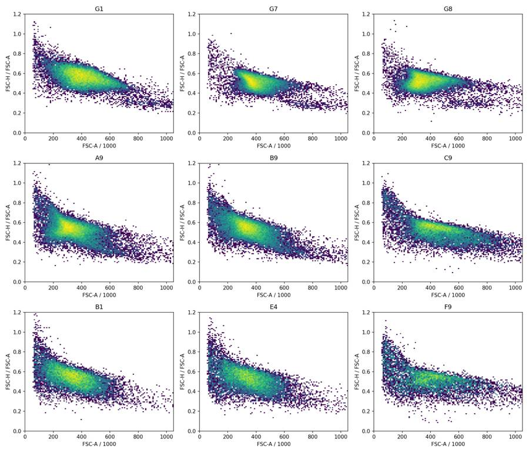
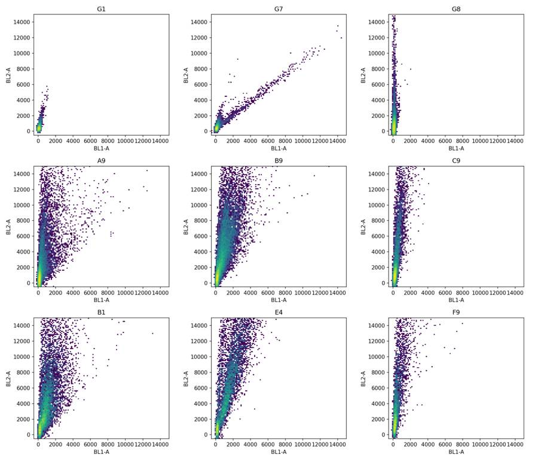
tool call · exec
text(await tools.exec_command({cmd:"python - <<'PY'\nimport flowkit as fk,numpy as np\nfrom scipy.stats import linregress\nfor w,primary,secondary,cut in [('G7',3,4,3000),('G8',4,3,10000)]:\n s=fk.Sample(f'inputs/raw/Caspase-assay-2-mlk_caspase_Group_{w}.fcs');x=s.get_events(source='raw')\n m=(x[:,1]>60000)&(x[:,2]>40000)&(x[:,1]<1048575)&(x[:,2]<1048575)&(x[:,5]/x[:,1]>.4)&(x[:,5]/x[:,1]<.9)\n a=x[m];p=a[a[:,primary]>=cut];n=a[a[:,primary]<300]\n print(w,'N',len(a),'pos',len(p),'neg',len(n),'med pos',np.median(p[:,[3,4]],axis=0),'med neg',np.median(n[:,[3,4]],axis=0))\n slope=(np.median(p[:,secondary])-np.median(n[:,secondary]))/(np.median(p[:,primary])-np.median(n[:,primary]))\n print('delta median',slope,'regression',linregress(p[:,primary],p[:,secondary]))\n for lower,upper in [(1000,3000),(3000,10000),(10000,30000),(30000,100000),(100000,300000)]:\n b=a[(a[:,primary]>lower)&(a[:,primary]<upper)]\n print(lower,upper,len(b),np.median(b[:,primary]),np.median(b[:,secondary]),np.median(b[:,secondary]/b[:,primary]))\nPY","max_output_tokens":3000}));
text(await tools.exec_command({cmd:"python - <<'PY'\nimport flowkit as fk,inspect\nfrom flowkit._models.gating_results import GatingResults\nprint(inspect.getsource(fk.Matrix.apply))\nprint(inspect.getsource(GatingResults.get_gate_count))\nprint(inspect.getsource(GatingResults.get_gate_membership))\nPY","max_output_tokens":4000}));
tool output
Script completed
Wall time 1.5 seconds
Output:
{"chunk_id":"03d0c1","wall_time_seconds":0.585800056,"exit_code":0,"original_token_count":352,"output":"/usr/local/lib/python3.12/site-packages/numpy/core/fromnumeric.py:3504: RuntimeWarning: Mean of empty slice.\n return _methods._mean(a, axis=axis, dtype=dtype,\n/usr/local/lib/python3.12/site-packages/numpy/core/_methods.py:129: RuntimeWarning: invalid value encountered in scalar divide\n ret = ret.dtype.type(ret / rcount)\nG7 N 21418 pos 447 neg 19052 med pos [5953. 5663.] med neg [122. 378.]\ndelta median 0.9063625450180072 regression LinregressResult(slope=0.8904071165980185, intercept=338.9875508160221, rvalue=0.9887347459615815, pvalue=0.0, stderr=0.006389807081047543, intercept_stderr=52.21250213962758)\n1000 3000 329 1781.0 1956.0 1.059061957151129\n3000 10000 361 5242.0 5026.0 0.9403571829720319\n10000 30000 84 11659.5 10649.5 0.9243386685777784\n30000 100000 2 33629.0 29883.5 0.8904365865616011\n100000 300000 0 nan nan nan\nG8 N 22114 pos 769 neg 8029 med pos [ 119. 41369.] med neg [ 95. -57.]\ndelta median 0.0005793463042533674 regression LinregressResult(slope=0.00029729310267547296, intercept=121.72462966635213, rvalue=0.07654836091636871, pvalue=0.03380308938087012, stderr=0.0001398218699358981, intercept_stderr=9.416811306263126)\n1000 3000 4687 1379.0 131.0 0.08951175406871609\n3000 10000 754 4539.5 139.0 0.028252813923758602\n10000 30000 273 17472.0 116.0 0.006377629238977126\n30000 100000 423 54257.0 119.0 0.0020777137858132245\n100000 300000 68 130504.0 131.5 0.000982969820929153\n"}
{"chunk_id":"c2da36","wall_time_seconds":0.581618092,"exit_code":0,"original_token_count":771,"output":" def apply(self, sample):\n \"\"\"\n Apply compensation matrix to given Sample instance.\n\n :param sample: Sample instance with matching set of detectors\n :return: NumPy array of compensated events\n \"\"\"\n # Check that sample fluoro channels match the\n # matrix detectors\n sample_fluoro_labels = [sample.pnn_labels[i] for i in sample.fluoro_indices]\n if not set(self.detectors).issubset(sample_fluoro_labels):\n raise FlowKitException(\"Detectors must be a subset of the Sample's fluorochromes\")\n\n indices = [\n sample.get_channel_index(d) for d in self.detectors\n ]\n events = sample.get_events(source='raw')\n\n return flowutils.compensate.compensate(\n events,\n self.matrix,\n indices\n )\n\n def get_gate_count(self, gate_name, gate_path=None):\n \"\"\"\n Retrieve event count for the specified gate ID for the gating results sample\n\n :param gate_name: text string of a gate name\n :param gate_path: tuple of ancestor gate names\n :return: integer count of events in gate ID\n \"\"\"\n results = self._filter_gate_report(gate_name, gate_path=gate_path)\n\n return results['count'].values[0]\n\n def get_gate_membership(self, gate_name, gate_path=None):\n \"\"\"\n Retrieve a boolean array indicating gate membership for the events in the GatingResults sample.\n Note, the same gate ID may be found in multiple gate paths, i.e. the gate ID can be ambiguous.\n In this case, specify the full gate path to retrieve gate indices.\n\n :param gate_name: text string of a gate name\n :param gate_path: A tuple of ancestor gate IDs for the given gate ID. Alternatively, a string path delimited\n by forward slashes can also be given, e.g. ('/root/singlets/lymph/live')\n :return: NumPy boolean array (length of sample event count)\n \"\"\"\n gate_paths = self._gate_lut[gate_name]['paths']\n if len(gate_paths) > 1:\n if gate_path is None:\n raise ValueError(\"Gate name %s is ambiguous, specify the full gate path\")\n elif isinstance(gate_path, tuple):\n gate_path = \"/\".join(gate_path)\n else:\n gate_path = gate_paths[0]\n\n # need to check for quadrant gates, as they need to be handled differently\n gate_data = self.report[(self.report['sample'] == self.sample_id) & (self.report.gate_name == gate_name)]\n quad_parent_values = set(gate_data.quadrant_parent.to_list())\n\n if len(quad_parent_values) == 1 and None in quad_parent_values:\n # it's not a quadrant gate\n return self._raw_results[gate_name, gate_path]['events']\n elif len(quad_parent_values) == 1:\n quad_parent = quad_parent_values.pop()\n return self._raw_results[quad_parent, gate_path][gate_name]['events']\n else:\n raise ValueError(\"Report as bug: The gate %s appears to have multiple quadrant parents.\" % gate_name)\n\n"}tool call · exec
text(await tools.apply_patch("*** Begin Patch\n*** Add File: /task/outputs/analyse.py\n+\"\"\"Reproduce shared FlowKit gates and per-well event counts from immutable inputs.\n+\n+Run: python /task/outputs/analyse.py\n+The exported/reloaded GatingML strategy is used for all reported event counts.\n+\"\"\"\n+from pathlib import Path\n+import json\n+import hashlib\n+import numpy as np\n+import pandas as pd\n+import matplotlib\n+matplotlib.use('Agg')\n+import matplotlib.pyplot as plt\n+from matplotlib.colors import LogNorm\n+import flowkit as fk\n+\n+ROOT = Path('/task')\n+OUT = ROOT/'outputs'\n+LAYOUT = pd.read_csv(ROOT/'inputs/plate_layout.csv')\n+CHANNELS = ['BL1-A','BL2-A']\n+CELL_MIN_FSC = 60000\n+CELL_MIN_SSC = 40000\n+SCATTER_MAX = 1048575\n+SINGLET_MIN_RATIO = 0.4\n+SINGLET_MAX_RATIO = 0.9\n+LIVE_MAX = 5000.0\n+CASPASE_MIN = 800.0\n+\n+def sample(well):\n+ rec = LAYOUT.set_index('well').loc[well]\n+ return fk.Sample(str(ROOT/'inputs/raw'/rec['file']))\n+\n+def dim(name, low=None, high=None, comp='uncompensated'):\n+ return fk.Dimension(name, compensation_ref=comp, range_min=low, range_max=high)\n+\n+def scatter_strategy():\n+ gs=fk.GatingStrategy()\n+ gs.add_gate(fk.gates.RectangleGate('all_events',[dim('Time')]), ('root',))\n+ gs.add_gate(fk.gates.RectangleGate('cells',[dim('FSC-A', CELL_MIN_FSC, SCATTER_MAX),\n+ dim('SSC-A', CELL_MIN_SSC, SCATTER_MAX)]), ('root','all_events'))\n+ lo,hi=CELL_MIN_FSC,SCATTER_MAX\n+ vertices=[(lo,lo*SINGLET_MIN_RATIO),(hi,hi*SINGLET_MIN_RATIO),\n+ (hi,hi*SINGLET_MAX_RATIO),(lo,lo*SINGLET_MAX_RATIO)]\n+ gs.add_gate(fk.gates.PolygonGate('singlets',[dim('FSC-A'),dim('FSC-H')],vertices),\n+ ('root','all_events','cells'))\n+ return gs\n+\n+def estimate_compensation(gs):\n+ details={}\n+ slopes=[]\n+ for well,primary,secondary,positive_cut,negative_cut in [\n+ ('G7',3,4,3000,300),('G8',4,3,10000,2000)]:\n+ s=sample(well)\n+ r=gs.gate_sample(s)\n+ x=s.get_events(source='raw')[r.get_gate_membership('singlets')]\n+ pos=x[x[:,primary]>=positive_cut]\n+ neg=x[x[:,primary]<negative_cut]\n+ pm=np.median(pos[:,[primary,secondary]],axis=0)\n+ nm=np.median(neg[:,[primary,secondary]],axis=0)\n+ slope=float((pm[1]-nm[1])/(pm[0]-nm[0]))\n+ slopes.append(slope)\n+ details[well]={'primary_detector':s.pnn_labels[primary],\n+ 'secondary_detector':s.pnn_labels[secondary],\n+ 'positive_min':positive_cut,'negative_max':negative_cut,\n+ 'positive_n':len(pos),'negative_n':len(neg),\n+ 'positive_medians':pm.tolist(),'negative_medians':nm.tolist(),\n+ 'spillover_fraction':slope}\n+ matrix=np.array([[1,slopes[0]],[slopes[1],1]])\n+ details['matrix']=matrix.tolist()\n+ (OUT/'compensation.json').write_text(json.dumps(details,indent=2)+'\\n')\n+ return fk.Matrix(matrix, CHANNELS, fluorochromes=['CellEvent_Caspase_3_7','SYTOX_AADvanced'])\n+\n+def build_strategy():\n+ gs=scatter_strategy()\n+ comp=estimate_compensation(gs)\n+ gs.add_comp_matrix('single_stain_comp',comp)\n+ path=('root','all_events','cells','singlets')\n+ gs.add_gate(fk.gates.RectangleGate('live',[dim('BL2-A', high=LIVE_MAX,comp='single_stain_comp')]),path)\n+ gs.add_gate(fk.gates.RectangleGate('caspase_positive',[dim('BL1-A',low=CASPASE_MIN,comp='single_stain_comp')]),path+('live',))\n+ gs.add_gate(fk.gates.RectangleGate('dead',[dim('BL2-A',low=LIVE_MAX,comp='single_stain_comp')]),path)\n+ gs.add_gate(fk.gates.RectangleGate('dead_caspase_positive',[dim('BL1-A',low=CASPASE_MIN,comp='single_stain_comp')]),path+('dead',))\n+ gs.add_gate(fk.gates.RectangleGate('all_singlet_caspase_positive',[dim('BL1-A',low=CASPASE_MIN,comp='single_stain_comp')]),path)\n+ with (OUT/'gates.xml').open('wb') as f:\n+ fk.export_gatingml(gs,f)\n+ return fk.parse_gating_xml(str(OUT/'gates.xml'))\n+\n+POPULATIONS=[('all_events','other','none'),('cells','cells','all_events'),\n+ ('singlets','singlets','cells'),('live','live','singlets'),\n+ ('caspase_positive','marker_positive','live'),('dead','other','singlets'),\n+ ('dead_caspase_positive','other','dead'),\n+ ('all_singlet_caspase_positive','other','singlets')]\n+\n+def run():\n+ gs=build_strategy()\n+ rows=[]; metrics=[]; control_stats=[]\n+ cache={}\n+ for rec in LAYOUT.to_dict('records'):\n+ s=sample(rec['well']);x=s.get_events(source='raw')\n+ r=gs.gate_sample(s)\n+ n={p:int(r.get_gate_count(p)) for p,_,_ in POPULATIONS}\n+ assert n['all_events']==s.event_count\n+ assert n['live']+n['dead']==n['singlets']\n+ assert n['caspase_positive']+n['dead_caspase_positive']==n['all_singlet_caspase_positive']\n+ for p,role,parent in POPULATIONS:\n+ rows.append({'file':rec['file'],'well':rec['well'],'population':p,\n+ 'role':role,'parent':parent,'count':n[p],\n+ 'pct_of_parent':None if parent=='none' else 100*n[p]/n[parent] if n[parent] else None})\n+ xc=gs.get_comp_matrix('single_stain_comp').apply(s)\n+ m=dict(rec,**n,live_caspase_pct=100*n['caspase_positive']/n['live'],\n+ live_pct=100*n['live']/n['singlets'],\n+ all_singlet_caspase_pct=100*n['all_singlet_caspase_positive']/n['singlets'],\n+ early_apoptotic_pct=100*n['caspase_positive']/n['singlets'],\n+ late_apoptotic_pct=100*n['dead_caspase_positive']/n['singlets'])\n+ live=r.get_gate_membership('live')\n+ m['live_caspase_median']=float(np.median(xc[live,3]))\n+ metrics.append(m)\n+ cache[rec['well']]=(s,x,xc,r)\n+ if rec['well'].startswith('G'):\n+ for pop in ['singlets','live']:\n+ keep=r.get_gate_membership(pop)\n+ for idx in [3,4]:\n+ st={'well':rec['well'],'population':pop,'detector':s.pnn_labels[i
… [2,697 more characters not shown]tool output
Script completed
Wall time 1.2 seconds
Output:
{}
{"chunk_id":"90224f","wall_time_seconds":1.001349786,"session_id":8854,"original_token_count":0,"output":""}14
agent
The single-stain controls show substantial caspase signal spilling into BL2. I’m correcting that using one control-derived compensation matrix, since it could otherwise misclassify caspase-positive cells as dead. I’m also retaining caspase counts across all singlets to check whether live-cell selection changes the interpretation.
tool call · exec
text(await tools.write_stdin({session_id:8854,chars:"","yield_time_ms":1000,"max_output_tokens":1000}));
text(await tools.exec_command({cmd:"cat outputs/compensation.json; cat outputs/control_statistics.csv; cat outputs/gating_run.log","max_output_tokens":7500}));
const r=await tools.view_image({path:"/task/outputs/compensated_controls.png"});image(r.image_url);
const q=await tools.view_image({path:"/task/outputs/control_histograms.png"});image(q.image_url);
tool output
Script completed Wall time 0.1 seconds Output:
{"chunk_id":"9e3a51","wall_time_seconds":0.00000295,"exit_code":0,"original_token_count":0,"output":""}{"chunk_id":"0058fd","wall_time_seconds":0.00000369,"exit_code":0,"original_token_count":3381,"output":"{\n \"G7\": {\n \"primary_detector\": \"BL1-A\",\n \"secondary_detector\": \"BL2-A\",\n \"positive_min\": 3000,\n \"negative_max\": 300,\n \"positive_n\": 447,\n \"negative_n\": 19052,\n \"positive_medians\": [\n 5953.0,\n 5663.0\n ],\n \"negative_medians\": [\n 122.0,\n 378.0\n ],\n \"spillover_fraction\": 0.9063625450180072\n },\n \"G8\": {\n \"primary_detector\": \"BL2-A\",\n \"secondary_detector\": \"BL1-A\",\n \"positive_min\": 10000,\n \"negative_max\": 2000,\n \"positive_n\": 769,\n \"negative_n\": 19888,\n \"positive_medians\": [\n 41369.0,\n 119.0\n ],\n \"negative_medians\": [\n 457.0,\n 106.0\n ],\n \"spillover_fraction\": 0.00031775518185373484\n },\n \"matrix\": [\n [\n 1.0,\n 0.9063625450180072\n ],\n [\n 0.00031775518185373484,\n 1.0\n ]\n ]\n}\nwell,population,detector,q0.5,q0.9,q0.95,q0.98,q0.99,q0.995,q0.999\nG1,singlets,BL1-A,90.93562936131183,205.95127749345528,246.80146389416507,302.6861034295952,357.119525735942,428.8312963464709,768.034850026322\nG1,singlets,BL2-A,289.67886609289894,606.9497123280238,764.9147743134179,1052.3976898422397,1346.151018701826,1697.0765755477687,3048.300423778965\nG1,live,BL1-A,90.93499366786752,205.94498412835668,246.75853869433828,301.8690094820114,356.60206589333256,425.9394058420685,735.0673870531701\nG1,live,BL2-A,289.64764461607604,606.2687238854755,763.9384427083855,1051.5261543249887,1341.4869623618567,1690.7879697026228,2749.4785187157895\nG2,singlets,BL1-A,154.83805270702297,476.4569919836232,1079.3278637207413,2598.6278917399227,3539.669787190042,4454.924054726081,7169.726513013766\nG2,singlets,BL2-A,592.1993657682574,5673.750614720373,36836.99572081267,72940.70375915202,97911.2124553603,119119.50143256223,184300.8015338594\nG2,live,BL1-A,141.33113179937436,289.14270594311733,358.92797089605335,519.7406740135066,748.0903508497707,1149.5697203800044,2581.4774191622405\nG2,live,BL2-A,476.02725257537594,1953.4995853962628,2849.1104637553626,3733.607336943734,4237.3655052331915,4607.345529384156,4918.416901086326\nG3,singlets,BL1-A,180.92373319413707,740.9098364300132,1493.3118269652825,2821.619154989711,3815.5635896811623,5193.15909876482,11325.323682869594\nG3,singlets,BL2-A,570.8618880118777,8723.633907332995,42855.5392137941,75981.994949376,102840.60153805882,129382.12046051321,197769.35644724796\nG3,live,BL1-A,163.1499400893123,316.9969222669137,394.9546474700044,621.2305812890863,996.5964756143409,1535.3435107566029,3119.070189458726\nG3,live,BL2-A,430.8143512447256,1872.6615380194617,2786.341125594187,3852.3453031514814,4360.468474065994,4682.865838762395,4949.656862224321\nG4,singlets,BL1-A,181.19692245182776,806.9669671549506,1767.091888363214,3179.547249535153,4272.156401376919,5531.31831263837,12082.861797169604\nG4,singlets,BL2-A,557.4870876713658,8751.67739806312,45248.97618604537,79744.90834955574,102442.92884450282,122440.87813174134,182386.88933647866\nG4,live,BL1-A,163.55378879955583,320.1358273514369,401.16710835297584,611.7416140966269,1013.8549976179844,1535.6007603679338,2653.569978116552\nG4,live,BL2-A,421.4857342178566,1830.9263489590703,2686.4758096219894,3835.9064991251394,4402.237550436999,4649.616887267672,4926.127738865191\nG5,singlets,BL1-A,229.69215381174945,585.977864906543,954.8004311579483,2251.9648018952603,4382.085347437522,5880.217422633207,10514.704271744868\nG5,singlets,BL2-A,881.6032426999085,3843.810023850685,9763.80706809043,41032.06761685614,64173.75608087394,87559.04215632573,131977.9630307834\nG5,live,BL1-A,217.0307174099023,462.1100364189709,588.5873070337406,763.4192478969904,983.88792968282,1256.6468336695832,2431.2662879620784\nG5,live,BL2-A,789.0279614419551,2227.5486199438155,2983.620211153658,3870.5273223114573,4346.1039409019395,4641.717397317583,4941.480144773267\nG6,singlets,BL1-A,243.73575890975374,650.8019972919776,1121.0250248393877,2793.8189794546124,4115.4318628485935,5569.974000673204,10414.87591449252\nG6,singlets,BL2-A,1032.1802225255792,7398.910848629025,33733.93552854499,77481.70833350914,108678.70797487993,136227.21616134775,211903.70267608837\nG6,live,BL1-A,222.6154432414953,450.34109405313166,557.5819521940801,716.4439160418547,883.1356255790866,1013.7178284200635,2033.0982658276105\nG6,live,BL2-A,859.3495346813803,2505.8616676471547,3335.396613284326,4200.326050303493,4547.058250597353,4757.758956704311,4968.919110859237\nG7,singlets,BL1-A,134.91334193389167,315.7597112358567,546.5128459635647,3125.8696520642366,6117.594791850775,9080.147629406785,14334.764488636481\nG7,singlets,BL2-A,282.16409678683647,596.8382768111222,745.8753173338057,1012.7112781074875,1282.6074239402228,1608.7454938160809,2733.801471891715\nG7,live,BL1-A,134.9127062404474,315.7316135856184,544.4730854064313,3126.593540150037,6119.601423244224,9080.80314279467,14335.812097300957\nG7,live,BL2-A,282.1376786141402,596.3150769091329,745.5459307533243,1011.4839618535804,1274.0971458374054,1605.406885233324,2594.3326816361887\nG8,singlets,BL1-A,107.8251484353585,227.19504482859804,270.0473966316464,335.42458231362576,406.6119104780553,500.344529869951,819.2095068335778\nG8,singlets,BL2-A,443.1660478062721,1870.576063450296,4629.526647469064,36770.621947209234,63572.992652004665,87187.8046331586,155047.50980792756\nG8,live,BL1-A,107.75140799581894,225.97445718110967,267.56138905651005,326.8413183779538,395.4697180832524,477.1670374779116,762.1187983021341\nG8,live,BL2-A,402.3199503397151,1449.0806025415827,1949.0184028526555,2944.153058244025,3788.548478196325,4304.701692867079,4820.514809589146\nwell cells singlets live caspase_positive live_caspase_pct live_pct all_singlet_caspase_pct\n A1 21053 19369 15090 1659 10.994 77.908 24.328\n A2 28651 26075 21412 3170 14.805
… [7,838 more characters not shown]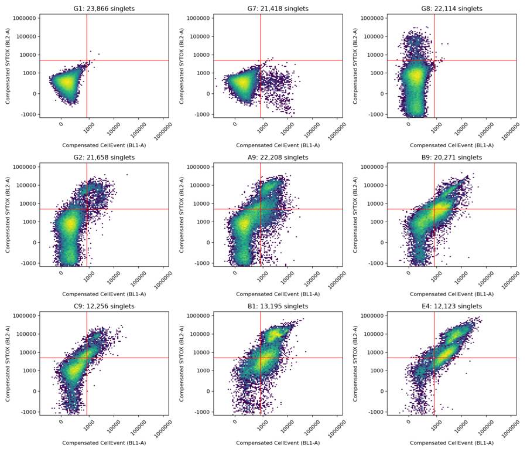
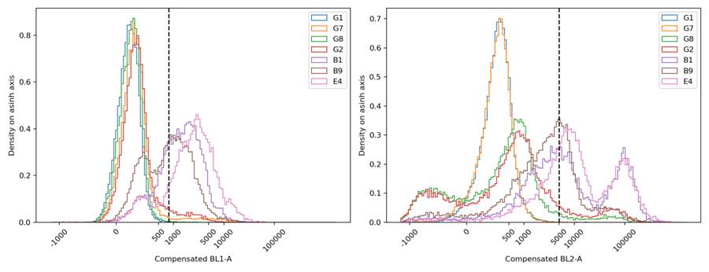
tool call · exec
text(await tools.apply_patch("*** Begin Patch\n*** Add File: /task/outputs/qc_and_sensitivity.py\n+\"\"\"Audit acquisition and probe analysis sensitivity without changing saved gates.\"\"\"\n+from pathlib import Path\n+import numpy as np\n+import pandas as pd\n+import flowkit as fk\n+import matplotlib\n+matplotlib.use('Agg')\n+import matplotlib.pyplot as plt\n+from matplotlib.colors import LogNorm\n+\n+ROOT=Path('/task');OUT=ROOT/'outputs'\n+layout=pd.read_csv(ROOT/'inputs/plate_layout.csv')\n+gs=fk.parse_gating_xml(str(OUT/'gates.xml'))\n+rows=[];sensitivity=[];bins_all=[]\n+for rec in layout.to_dict('records'):\n+ s=fk.Sample(str(ROOT/'inputs/raw'/rec['file']));x=s.get_events(source='raw')\n+ xc=gs.get_comp_matrix('single_stain_comp').apply(s)\n+ r=gs.gate_sample(s);sing=r.get_gate_membership('singlets')\n+ dt=np.diff(x[:,0]);gap_idx=int(np.argmax(dt))\n+ row=dict(rec,events=len(x),time_start=x[0,0],time_end=x[-1,0],max_gap_s=dt.max(),\n+ gap_start_s=x[gap_idx,0],time_backwards_n=int((dt<0).sum()),\n+ scatter_clipped_n=int(((x[:,1]>=1048575)|(x[:,2]>=1048575)).sum()),\n+ scatter_clipped_pct=100*np.mean((x[:,1]>=1048575)|(x[:,2]>=1048575)),\n+ bl1_clipped_n=int((x[:,3]>=1048575).sum()),bl2_clipped_n=int((x[:,4]>=1048575).sum()),\n+ live_n=int(r.get_gate_count('live')),singlet_n=int(sing.sum()),\n+ cell_pct=100*r.get_gate_count('cells')/len(x))\n+ for lo,hi in [(1,5),(5,9),(9,13),(13,15)]:\n+ m=(x[:,0]>=lo)&(x[:,0]<hi)\n+ row[f'rate_{lo}_{hi}']=m.sum()/(hi-lo)\n+ row[f'fsc_med_{lo}_{hi}']=np.median(x[m,1])\n+ ms=m&sing\n+ ml=ms&r.get_gate_membership('live')\n+ row[f'live_marker_pct_{lo}_{hi}']=100*(ml&r.get_gate_membership('caspase_positive')).sum()/ml.sum()\n+ rows.append(row)\n+ for i in range(1,61):\n+ lo=(i-1)*.25;hi=i*.25\n+ m=(x[:,0]>=lo)&(x[:,0]<hi)\n+ bins_all.append({'well':rec['well'],'start_s':lo,'end_s':hi,'events':int(m.sum()),\n+ 'fsc_median':np.median(x[m,1]) if m.any() else np.nan})\n+ for live_max in [2000,3000,5000,10000,15000]:\n+ for pos_min in [400,600,800,1000,1200]:\n+ live=sing&(xc[:,4]<live_max)\n+ pos=live&(xc[:,3]>=pos_min)\n+ sensitivity.append(dict(well=rec['well'],cell_line=rec['cell_line'],\n+ camptothecin=rec['camptothecin'],conditioned_media=rec['conditioned_media'],\n+ scenario='fluorescence_thresholds',live_max=live_max,caspase_min=pos_min,\n+ numerator=int(pos.sum()),denominator=int(live.sum()),\n+ metric=100*pos.sum()/live.sum()))\n+ # Independent secondary sensitivity: fixed fluorescence gates, broader/narrower morphology.\n+ for name,fsc_min,ssc_min,ratio_min,ratio_max in [\n+ ('broad_scatter',40000,20000,.35,.95),\n+ ('narrow_scatter',100000,60000,.45,.85),\n+ ('no_compensation',60000,40000,.4,.9),\n+ ('lower_compensation',60000,40000,.4,.9),\n+ ('higher_compensation',60000,40000,.4,.9)]:\n+ morph=(x[:,1]>=fsc_min)&(x[:,2]>=ssc_min)&(x[:,1]<1048575)&(x[:,2]<1048575)\n+ morph &= (x[:,5]>=ratio_min*x[:,1])&(x[:,5]<=ratio_max*x[:,1])\n+ cc=xc\n+ if name=='no_compensation':cc=x\n+ elif name in ['lower_compensation','higher_compensation']:\n+ matrix=gs.get_comp_matrix('single_stain_comp').matrix.copy()\n+ matrix[0,1]=.8 if name=='lower_compensation' else 1.0\n+ cc=fk.Matrix(matrix,['BL1-A','BL2-A']).apply(s)\n+ live=morph&(cc[:,4]<5000)\n+ pos=live&(cc[:,3]>=800)\n+ sensitivity.append(dict(well=rec['well'],cell_line=rec['cell_line'],\n+ camptothecin=rec['camptothecin'],conditioned_media=rec['conditioned_media'],\n+ scenario=name,live_max=5000,caspase_min=800,\n+ numerator=int(pos.sum()),denominator=int(live.sum()),\n+ metric=100*pos.sum()/live.sum()))\n+pd.DataFrame(rows).to_csv(OUT/'acquisition_qc.csv',index=False)\n+pd.DataFrame(bins_all).to_csv(OUT/'acquisition_time_bins.csv',index=False)\n+pd.DataFrame(sensitivity).to_csv(OUT/'sensitivity.csv',index=False)\n+print(pd.DataFrame(rows)[['well','scatter_clipped_pct','max_gap_s','gap_start_s','live_n','cell_pct']].round(3).to_string(index=False))\n+\n+# Time versus scatter for all wells (same axes), plus per-second event rates.\n+fig,axs=plt.subplots(7,12,figsize=(30,18))\n+for ax in axs.ravel():ax.set_visible(False)\n+for rec in layout.to_dict('records'):\n+ w=rec['well'];ax=axs[ord(w[0])-65,int(w[1:])-1];ax.set_visible(True)\n+ s=fk.Sample(str(ROOT/'inputs/raw'/rec['file']));x=s.get_events(source='raw')\n+ ax.hist2d(x[:,0],x[:,1]/1000,bins=(68,60),range=[[0,17],[-30,1050]],norm=LogNorm(),cmap='viridis')\n+ ax.set_title(w,fontsize=10);ax.tick_params(labelsize=6)\n+fig.suptitle('Acquisition time (seconds) versus FSC-A / 1000; all events',fontsize=16)\n+fig.tight_layout(rect=[0,0,1,.97]);fig.savefig(OUT/'qc_time_scatter.png',dpi=150);plt.close(fig)\n*** End Patch"));
text(await tools.exec_command({cmd:"python outputs/qc_and_sensitivity.py > outputs/qc_run.log","yield_time_ms":1000,"max_output_tokens":1000}));
text(await tools.exec_command({cmd:"python - <<'PY'\nimport pandas as pd\nm=pd.read_csv('outputs/well_metrics.csv');m=m[~m.well.str.startswith('G')]\nfor v in ['live_caspase_pct','live_pct','all_singlet_caspase_pct','live_caspase_median']:\n print(v)\n print(m.groupby(['cell_line','camptothecin','conditioned_media'])[v].agg(['mean','std']).round(2).to_string())\nPY","max_output_tokens":6000}));
tool output
Script completed
Wall time 1.5 seconds
Output:
{}
{"chunk_id":"aeb850","wall_time_seconds":1.001084525,"session_id":82289,"original_token_count":0,"output":""}
{"chunk_id":"eab2e3","wall_time_seconds":0.215409429,"exit_code":0,"original_token_count":2431,"output":"live_caspase_pct\n mean std\ncell_line camptothecin conditioned_media \nE1 10uM WT 24hr conditioned media 43.81 5.52\n WT 48hr conditioned media 43.22 4.75\n no conditioned media 30.59 1.05\n 2uM WT 24hr conditioned media 46.52 10.44\n WT 48hr conditioned media 43.50 7.92\n no conditioned media 39.62 0.42\n 5uM WT 24hr conditioned media 43.06 4.65\n WT 48hr conditioned media 42.26 5.50\n no conditioned media 29.12 4.23\n DMSO WT 24hr conditioned media 47.37 3.84\n WT 48hr conditioned media 47.01 0.70\n no conditioned media 26.87 4.71\nE3 10uM WT 24hr conditioned media 7.98 3.76\n WT 48hr conditioned media 7.27 2.31\n no conditioned media 3.88 1.20\n 2uM WT 24hr conditioned media 5.50 0.22\n WT 48hr conditioned media 5.05 0.01\n no conditioned media 1.88 0.07\n 5uM WT 24hr conditioned media 12.79 4.61\n WT 48hr conditioned media 6.13 1.83\n no conditioned media 2.84 1.12\n DMSO WT 24hr conditioned media 10.81 3.29\n WT 48hr conditioned media 3.78 3.13\n no conditioned media 2.76 1.17\nWT 10uM WT 24hr conditioned media 12.35 1.91\n WT 48hr conditioned media 11.10 4.84\n no conditioned media 9.04 1.63\n 2uM WT 24hr conditioned media 12.60 4.33\n WT 48hr conditioned media 9.12 3.54\n no conditioned media 8.56 2.52\n 5uM WT 24hr conditioned media 11.23 5.05\n WT 48hr conditioned media 9.82 4.14\n no conditioned media 7.88 2.89\n DMSO WT 24hr conditioned media 14.44 4.84\n WT 48hr conditioned media 10.29 1.98\n no conditioned media 5.90 4.95\nlive_pct\n mean std\ncell_line camptothecin conditioned_media \nE1 10uM WT 24hr conditioned media 42.54 5.00\n WT 48hr conditioned media 38.00 9.72\n no conditioned media 58.08 11.65\n 2uM WT 24hr conditioned media 38.40 11.29\n WT 48hr conditioned media 36.79 6.79\n no conditioned media 56.46 6.23\n 5uM WT 24hr conditioned media 42.18 12.25\n WT 48hr conditioned media 39.69 10.48\n no conditioned media 59.43 10.34\n DMSO WT 24hr conditioned media 38.76 12.03\n WT 48hr conditioned media 38.44 7.85\n no conditioned media 55.60 0.56\nE3 10uM WT 24hr conditioned media 44.07 3.13\n WT 48hr conditioned media 48.20 2.02\n no conditioned media 65.27 10.40\n 2uM WT 24hr conditioned media 48.42 0.42\n WT 48hr conditioned media 50.08 6.81\n no conditioned media 78.15 8.77\n 5uM WT 24hr conditioned media 44.16 3.54\n WT 48hr conditioned media 44.21 3.52\n no conditioned media 74.27 11.25\n DMSO WT 24hr conditioned media 41.03 6.26\n WT 48hr conditioned media 60.71 15.05\n no conditioned media 75.97 0.10\nWT 10uM WT 24hr conditioned media 72.82 7.19\n WT 48hr conditioned media 73.24 6.51\n no conditioned media 72.27 6.46\n 2uM WT 24hr conditioned media 76.05 8.36\n WT 48hr conditioned media 74.10 4.71\n no conditioned media 74.66 2.45\n 5uM WT 24hr conditioned media 77.06 7.15\n WT 48hr conditioned media 74.91 4.61\n no conditioned media 75.04 3.36\n DMSO WT 24hr conditioned media 67.43 10.14\n WT 48hr conditioned media 66.11 9.37\n no conditioned media 77.23 6.70\nall_singlet_caspase_pct\n mean std\ncell_line camptothecin conditioned_media \nE1 10uM WT 24hr conditioned media 72.30 1.17\n WT 48hr conditioned media 73.96 5.34\n no conditioned media 55.91 7.65\n 2uM WT 24hr conditioned media 77.54 2.78\n WT 48hr conditioned media 75.76 1.98\n no conditioned media 61.84 4.75\n 5uM WT 24hr conditioned media 73.99 5.43\n WT 48hr conditioned media 74.05 4.91\n no conditioned media 54.37 6.05\n DMSO WT 24hr conditioned media 76.05 8.80\n WT 48hr conditioned media
… [4,146 more characters not shown]tool call · exec
text(await tools.clock__curr_time({}));
text(await tools.write_stdin({session_id:82289,chars:"","yield_time_ms":1000,"max_output_tokens":1000}));
text(await tools.exec_command({cmd:"cat outputs/qc_run.log","max_output_tokens":5000}));
tool output
Script completed
Wall time 1.4 seconds
Output:
{"current_time":"2026-11-10 17:12:56 UTC"}
{"chunk_id":"ce1ad6","wall_time_seconds":1.322591236,"exit_code":0,"original_token_count":0,"output":""}
{"chunk_id":"ad053e","wall_time_seconds":0.00000293,"exit_code":0,"original_token_count":1377,"output":"well scatter_clipped_pct max_gap_s gap_start_s live_n cell_pct\n A1 1.178 0.010 3.795 15090 67.202\n A2 0.946 0.006 16.629 21412 71.326\n A3 0.761 0.007 16.751 23756 66.677\n A4 1.433 0.012 2.195 16216 72.139\n A5 1.101 0.035 7.772 17855 71.727\n A6 1.475 0.006 2.457 18080 75.355\n A7 1.130 0.005 0.085 19786 75.802\n A8 1.977 0.009 13.467 11593 75.681\n A9 1.219 0.008 8.280 17064 61.568\n A10 1.199 0.013 7.918 20435 68.131\n A11 1.173 0.012 16.472 20194 66.099\n A12 1.289 0.017 5.017 12591 63.465\n B1 0.560 0.029 16.304 6080 77.272\n B2 0.416 0.005 15.179 10800 71.411\n B3 0.309 0.010 16.656 11520 67.906\n B4 1.227 0.022 8.104 5915 70.904\n B5 0.263 0.041 16.581 5984 80.859\n B6 0.407 0.038 16.602 9915 72.635\n B7 0.378 0.005 7.758 9425 69.419\n B8 0.591 0.022 16.548 6805 66.906\n B9 0.648 0.007 0.303 13442 65.328\n B10 0.676 0.029 16.102 15667 64.953\n B11 0.483 0.023 16.806 13727 60.634\n B12 0.773 0.005 14.933 8006 52.020\n C1 5.135 0.027 16.494 3739 62.349\n C2 4.164 0.009 15.786 5129 52.422\n C3 5.342 0.010 14.523 5293 60.920\n C4 4.615 0.010 16.491 3661 56.214\n C5 4.629 0.093 16.733 4020 54.552\n C6 4.329 0.046 16.273 4408 53.877\n C7 4.088 0.026 16.472 5813 54.949\n C8 4.171 0.064 16.539 4170 56.235\n C9 5.426 0.008 14.558 8901 61.489\n C10 6.338 0.100 16.429 7623 66.133\n C11 7.540 0.061 16.345 10329 67.533\n C12 4.367 0.010 7.502 9480 61.543\n D1 1.108 0.073 16.449 12667 66.965\n D2 1.013 0.005 16.386 19443 68.750\n D3 0.783 0.005 3.971 19375 66.961\n D4 2.076 0.117 16.679 9916 70.158\n D5 1.372 0.014 16.744 12203 68.597\n D6 1.367 0.082 16.393 14721 69.676\n D7 0.842 0.138 16.148 17438 69.694\n D8 1.555 0.019 16.739 9484 64.210\n D9 1.689 0.388 16.337 12846 59.809\n D10 1.132 0.022 10.107 17545 67.935\n D11 0.903 0.064 16.142 19517 66.283\n D12 1.841 0.023 16.743 17948 81.223\n E1 0.614 0.029 16.697 4751 71.978\n E2 0.444 0.054 16.183 7478 68.512\n E3 0.400 0.058 15.916 7236 66.771\n E4 1.190 0.108 15.781 3668 75.036\n E5 0.828 0.032 16.568 3836 74.881\n E6 0.402 0.006 8.024 6706 69.538\n E7 0.358 0.005 16.312 7332 65.035\n E8 1.496 0.026 5.565 3184 71.387\n E9 1.166 0.006 11.876 7673 59.557\n E10 0.728 0.004 1.847 12063 61.816\n E11 0.496 0.006 16.565 11761 57.674\n E12 1.061 0.009 8.545 6954 53.390\n F1 4.650 0.020 16.355 2687 58.929\n F2 3.624 0.011 14.040 3160 48.484\n F3 3.693 0.009 13.264 4420 53.465\n F4 4.893 0.015 14.980 1955 54.352\n F5 3.891 0.010 16.567 2858 52.690\n F6 3.669 0.011 14.546 2607 51.146\n F7 3.917 0.027 16.656 3982 52.880\n F8 9.448 0.013 14.506 6493 71.400\n F9 6.350 0.008 15.286 3910 48.147\n F10 7.359 0.106 8.008 5186 52.983\n F11 7.150 0.015 8.740 8132 65.329\n F12 5.054 0.014 16.229 7276 66.145\n G1 1.992 0.030 16.518 23862 94.258\n G2 2.417 0.088 7.679 19346 92.310\n G3 1.246 0.021 4.637 26535 88.929\n G4 1.199 0.106 16.307 25208 88.471\n G5 7.537 0.081 16.236 10814 79.318\n G6 9.176 0.016 6.959 11023 79.661\n G7 1.490 0.029 16.159 21415 93.672\n G8 1.661 0.018 3.705 21062 95.025\n"}tool call · exec
const r=await tools.view_image({path:"/task/outputs/qc_time_scatter.png"});image(r.image_url);
text(await tools.exec_command({cmd:"python - <<'PY'\nimport pandas as pd\ns=pd.read_csv('outputs/sensitivity.csv');s=s[~s.well.str.startswith('G')]\ng=s.groupby(['scenario','live_max','caspase_min','cell_line','camptothecin','conditioned_media']).metric.mean().unstack()\nfor line in ['E1','E3']:\n print('\\n',line,'CM change range, full threshold grid')\n a=g.loc['fluorescence_thresholds'];a=a[a.index.get_level_values('cell_line')==line]\n for dose in ['DMSO','2uM','5uM','10uM']:\n b=a[a.index.get_level_values('camptothecin')==dose]\n for cm in ['WT 24hr conditioned media','WT 48hr conditioned media']:\n d=b[cm]-b['no conditioned media']\n print(dose,cm,round(d.min(),2),round(d.max(),2),'negative',int((d<0).sum()))\n print('other sensitivities')\n a=g.loc[g.index.get_level_values('scenario')!='fluorescence_thresholds'];a=a[a.index.get_level_values('cell_line')==line]\n print(a.round(2).to_string())\nPY","max_output_tokens":5000}));
tool output
Script completed Wall time 0.3 seconds Output:
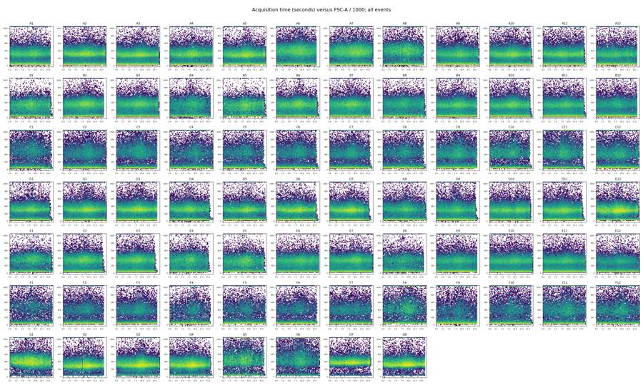
{"chunk_id":"63fa1b","wall_time_seconds":0.060155449,"exit_code":0,"original_token_count":1782,"output":"\n E1 CM change range, full threshold grid\nDMSO WT 24hr conditioned media 3.76 21.48 negative 0\nDMSO WT 48hr conditioned media 4.46 20.14 negative 0\n2uM WT 24hr conditioned media 0.94 16.85 negative 0\n2uM WT 48hr conditioned media -3.29 13.73 negative 5\n5uM WT 24hr conditioned media 7.96 18.95 negative 0\n5uM WT 48hr conditioned media 5.81 17.34 negative 0\n10uM WT 24hr conditioned media 6.7 16.97 negative 0\n10uM WT 48hr conditioned media 4.31 13.84 negative 0\nother sensitivities\nconditioned_media WT 24hr conditioned media WT 48hr conditioned media no conditioned media\nscenario live_max caspase_min cell_line camptothecin \nbroad_scatter 5000 800 E1 10uM 42.48 41.14 29.35\n 2uM 45.54 41.74 37.98\n 5uM 42.36 40.82 28.57\n DMSO 44.21 43.33 25.61\nhigher_compensation 5000 800 E1 10uM 44.96 44.26 31.51\n 2uM 48.06 45.06 40.72\n 5uM 44.34 43.65 30.19\n DMSO 48.39 48.17 27.64\nlower_compensation 5000 800 E1 10uM 42.70 41.91 29.40\n 2uM 44.74 41.86 38.32\n 5uM 41.65 40.68 27.96\n DMSO 46.20 45.55 25.90\nnarrow_scatter 5000 800 E1 10uM 43.46 44.03 30.62\n 2uM 45.38 43.83 40.19\n 5uM 42.39 42.49 29.04\n DMSO 47.92 48.70 26.76\nno_compensation 5000 800 E1 10uM 34.04 32.19 21.23\n 2uM 31.04 28.96 28.07\n 5uM 30.30 29.40 19.80\n DMSO 36.89 34.96 18.66\n\n E3 CM change range, full threshold grid\nDMSO WT 24hr conditioned media 0.46 34.22 negative 0\nDMSO WT 48hr conditioned media -0.21 15.42 negative 4\n2uM WT 24hr conditioned media 0.09 31.13 negative 0\n2uM WT 48hr conditioned media 0.37 30.12 negative 0\n5uM WT 24hr conditioned media 1.77 33.27 negative 0\n5uM WT 48hr conditioned media -0.03 28.14 negative 1\n10uM WT 24hr conditioned media 0.5 18.89 negative 0\n10uM WT 48hr conditioned media 0.19 16.06 negative 0\nother sensitivities\nconditioned_media WT 24hr conditioned media WT 48hr conditioned media no conditioned media\nscenario live_max caspase_min cell_line camptothecin \nbroad_scatter 5000 800 E3 10uM 7.97 7.10 4.20\n 2uM 6.21 5.61 2.31\n 5uM 12.74 6.41 3.24\n DMSO 9.83 3.87 3.13\nhigher_compensation 5000 800 E3 10uM 8.39 7.62 4.03\n 2uM 5.75 5.38 1.93\n 5uM 13.27 6.49 2.97\n DMSO 11.32 3.93 2.87\nlower_compensation 5000 800 E3 10uM 7.47 6.89 3.70\n 2uM 5.21 4.81 1.79\n 5uM 12.14 5
… [1,298 more characters not shown]18
agent
The current gates show no rescue pattern: conditioned media raises E1 caspase positivity and reduces the live-cell fraction in both KO lines. E3 needs a qualified interpretation because its no-media result is below WT at this positivity threshold. I’m checking threshold sensitivity and matched WT comparisons before writing the conclusion.
tool call · exec
text(await tools.exec_command({cmd:"python - <<'PY'\nimport pandas as pd\ns=pd.read_csv('outputs/sensitivity.csv');s=s[(s.scenario=='fluorescence_thresholds')&(s.live_max==5000)&(~s.well.str.startswith('G'))]\na=s.groupby(['caspase_min','camptothecin','conditioned_media','cell_line']).metric.mean().unstack()\na['E3-WT']=a.E3-a.WT\nprint(a.round(2).to_string())\nm=pd.read_csv('outputs/well_metrics.csv')\nprint('Replicate positive differences')\nfor well,ref in [('F8','C8'),('D12','A12'),('F10','C10'),('F9','C9')]:\n print(m.set_index('well').loc[[well,ref],['live_caspase_pct','live_pct','all_singlet_caspase_pct']].to_string())\nPY","max_output_tokens":5000}));
tool output
Script completed
Wall time 0.2 seconds
Output:
{"chunk_id":"d3ae02","wall_time_seconds":0.076888999,"exit_code":0,"original_token_count":1469,"output":"cell_line E1 E3 WT E3-WT\ncaspase_min camptothecin conditioned_media \n400 10uM WT 24hr conditioned media 64.21 35.84 19.79 16.05\n WT 48hr conditioned media 62.51 35.22 17.48 17.74\n no conditioned media 50.66 23.71 18.75 4.96\n 2uM WT 24hr conditioned media 59.35 34.88 19.13 15.76\n WT 48hr conditioned media 56.65 35.93 14.66 21.27\n no conditioned media 56.88 15.41 15.22 0.19\n 5uM WT 24hr conditioned media 57.38 42.51 17.51 25.00\n WT 48hr conditioned media 57.08 36.65 15.45 21.20\n no conditioned media 46.46 18.84 14.73 4.10\n DMSO WT 24hr conditioned media 66.29 38.21 23.50 14.71\n WT 48hr conditioned media 63.85 29.10 17.04 12.06\n no conditioned media 46.86 15.41 12.69 2.72\n600 10uM WT 24hr conditioned media 54.84 15.82 15.40 0.43\n WT 48hr conditioned media 53.12 15.31 13.55 1.77\n no conditioned media 40.27 9.13 12.56 -3.43\n 2uM WT 24hr conditioned media 52.09 13.49 14.99 -1.50\n WT 48hr conditioned media 49.13 13.77 11.09 2.68\n no conditioned media 47.31 4.47 10.99 -6.51\n 5uM WT 24hr conditioned media 49.74 22.18 13.61 8.57\n WT 48hr conditioned media 49.05 14.55 11.81 2.74\n no conditioned media 36.70 6.31 10.10 -3.79\n DMSO WT 24hr conditioned media 57.65 19.51 18.31 1.20\n WT 48hr conditioned media 56.08 10.07 12.65 -2.58\n no conditioned media 36.18 5.79 8.26 -2.47\n800 10uM WT 24hr conditioned media 43.81 7.98 12.35 -4.36\n WT 48hr conditioned media 43.22 7.27 11.10 -3.83\n no conditioned media 30.59 3.88 9.04 -5.16\n 2uM WT 24hr conditioned media 46.52 5.50 12.60 -7.10\n WT 48hr conditioned media 43.50 5.05 9.12 -4.07\n no conditioned media 39.62 1.88 8.56 -6.67\n 5uM WT 24hr conditioned media 43.06 12.79 11.23 1.55\n WT 48hr conditioned media 42.26 6.13 9.82 -3.69\n no conditioned media 29.12 2.84 7.88 -5.04\n DMSO WT 24hr conditioned media 47.37 10.81 14.44 -3.62\n WT 48hr conditioned media 47.01 3.78 10.29 -6.51\n no conditioned media 26.87 2.76 5.90 -3.13\n1000 10uM WT 24hr conditioned media 33.80 4.65 9.75 -5.10\n WT 48hr conditioned media 34.62 3.72 9.03 -5.32\n no conditioned media 22.78 2.01 6.77 -4.76\n 2uM WT 24hr conditioned media 41.29 2.59 10.75 -8.17\n WT 48hr conditioned media 37.86 2.42 7.56 -5.13\n no conditioned media 32.56 1.09 6.95 -5.86\n 5uM WT 24hr conditioned media 36.75 8.44 9.55 -1.11\n WT 48hr conditioned media 35.63 3.15 8.11 -4.96\n no conditioned media 22.86 1.60 6.30 -4.70\n DMSO WT 24hr conditioned media 36.84 6.05 11.19 -5.13\n WT 48hr conditioned media 37.66 1.75 8.14 -6.39\n no conditioned media 19.84 1.57 4.28 -2.72\n1200 10uM WT 24hr conditioned media 25.25 3.12 7.82 -4.70\n WT 48hr conditioned media 27.23 2.29 7.28 -4.99\n no conditioned media 17.11 1.10 5.32 -4.22\n 2uM WT 24hr conditioned media 36.27 1.57 9.22 -7.65\n WT 48hr conditioned media 32.69 1.53 6.38 -4.84\n no conditioned media 26.41 0.73 5.73 -5.00\n 5uM WT 24hr conditioned media 31.04 6.32 8.12 -1.80\n WT 48hr conditioned media 29.99 1.94 6.85 -4.91\n no conditioned media 17.73 1.08 5.10 -4.02\n DMSO WT 24hr conditioned media 27.69 3.54 8.77 -5.23\n WT 48hr conditioned media 29.35 0.81 6.52 -5.70\n no conditioned media 14.81 1.02 3.35 -2.34\nReplicate positive differences\n live_caspase_pct live_pct all_singlet_caspase_pct\nwell \nF8 1.570923 71.351648 18.736264\nC8 5.995204 50.066034 43.186457\n live_caspase_pct live_pct all_singlet_caspase_pct\nwell \nD12 2.39581 81.969309 16.783887\nA12 9.39560 72.487047 28.301670\n live_caspase_pct live_pct all_singlet_caspase_pct\nwell \nF10 3.625145 66.317136 25.537084\nC10 2.046438 82.224140 13.957502\n live_caspase_pct live_pct all_singlet_caspase_pct\nwell \nF9 4
… [107 more characters not shown]tool call · exec
text(await tools.exec_command({cmd:"python - <<'PY'\nimport pandas as pd,flowkit as fk\nl=pd.read_csv('inputs/plate_layout.csv');q=pd.read_csv('outputs/raw_qc.csv')\nprint(q[['well','start','end']].to_string(index=False))\nprint('metadata verification')\nsettings={};mismatch=[]\nfor row in l.to_dict('records'):\n s=fk.Sample('inputs/raw/'+row['file']);md=s.metadata\n for key in ['date','p2v','p3v','p4v','p5v','#flowrate','vol','spillover','lost']:\n settings.setdefault(key,set()).add(md.get(key))\n if md.get('wellid')!=row['well']:mismatch.append(row['well'])\nprint(settings);print('well mismatch',mismatch)\nPY","max_output_tokens":4000}));
text(await tools.web__run({open:[{ref_id:"https://tools.thermofisher.com/content/sfs/manuals/cellevent_caspase_3_7_grn_flow_cytometry_assay_kit_man.pdf"}],response_length:"long"}));
tool output
Script completed
Wall time 1.5 seconds
Output:
{"chunk_id":"66e7df","wall_time_seconds":0.819174245,"exit_code":0,"original_token_count":622,"output":"well start end\n A1 14:33:37 14:33:54\n A2 14:34:20 14:34:37\n A3 14:35:03 14:35:21\n A4 14:35:48 14:36:05\n A5 14:36:31 14:36:48\n A6 14:37:16 14:37:32\n A7 14:37:59 14:38:16\n A8 14:38:44 14:39:00\n A9 14:39:26 14:39:44\n A10 14:40:10 14:40:27\n A11 14:40:54 14:41:11\n A12 14:41:38 14:41:55\n B1 14:42:21 14:42:39\n B2 14:43:07 14:43:23\n B3 14:43:49 14:44:07\n B4 14:44:35 14:44:51\n B5 14:45:17 14:45:34\n B6 14:46:01 14:46:18\n B7 14:46:46 14:47:02\n B8 14:47:28 14:47:46\n B9 14:48:13 14:48:29\n B10 14:48:56 14:49:13\n B11 14:49:40 14:49:57\n B12 14:50:24 14:50:41\n C1 14:51:07 14:51:25\n C2 14:51:51 14:52:08\n C3 14:52:36 14:52:52\n C4 14:53:18 14:53:36\n C5 14:54:02 14:54:20\n C6 14:54:46 14:55:03\n C7 14:55:30 14:55:47\n C8 14:56:13 14:56:31\n C9 14:56:58 14:57:15\n C10 14:57:41 14:57:58\n C11 14:58:25 14:58:42\n C12 14:59:08 14:59:25\n D1 14:59:52 15:00:09\n D2 15:00:36 15:00:53\n D3 15:01:20 15:01:37\n D4 15:02:03 15:02:20\n D5 15:02:47 15:03:04\n D6 15:03:31 15:03:48\n D7 15:04:14 15:04:32\n D8 15:04:58 15:05:15\n D9 15:05:42 15:05:59\n D10 15:06:27 15:06:43\n D11 15:07:10 15:07:27\n D12 15:07:54 15:08:11\n E1 15:08:37 15:08:54\n E2 15:09:21 15:09:38\n E3 15:10:05 15:10:22\n E4 15:10:49 15:11:06\n E5 15:11:32 15:11:49\n E6 15:12:16 15:12:33\n E7 15:13:00 15:13:17\n E8 15:13:44 15:14:01\n E9 15:14:28 15:14:45\n E10 15:15:11 15:15:28\n E11 15:15:55 15:16:12\n E12 15:16:39 15:16:56\n F1 15:17:22 15:17:40\n F2 15:18:07 15:18:24\n F3 15:18:51 15:19:08\n F4 15:19:35 15:19:51\n F5 15:20:18 15:20:35\n F6 15:21:02 15:21:19\n F7 15:21:45 15:22:02\n F8 15:22:29 15:22:46\n F9 15:23:14 15:23:30\n F10 15:23:57 15:24:14\n F11 15:24:41 15:24:58\n F12 15:25:24 15:25:42\n G1 15:26:08 15:26:25\n G2 15:26:53 15:27:09\n G3 15:27:35 15:27:53\n G4 15:28:19 15:28:36\n G5 15:29:03 15:29:20\n G6 15:29:46 15:30:04\n G7 15:31:28 15:31:46\n G8 15:32:13 15:32:30\nmetadata verification\n{'date': {'02-Dec-2022'}, 'p2v': {'20'}, 'p3v': {'290'}, 'p4v': {'225'}, 'p5v': {'350'}, '#flowrate': {'500'}, 'vol': {'138000', '135000', '142000', '141000', '140000', '131000', '133000'}, 'spillover': {'6,BL1-A,BL2-A,BL1-H,BL2-H,BL1-W,BL2-W,1.000000,0.000000,0.000000,0.000000,0.000000,0.000000,0.000000,1.000000,0.000000,0.000000,0.000000,0.000000,0.000000,0.000000,1.000000,0.000000,0.000000,0.000000,0.000000,0.000000,0.000000,1.000000,0.000000,0.000000,0.000000,0.000000,0.000000,0.000000,1.000000,0.000000,0.000000,0.000000,0.000000,0.000000,0.000000,1.000000'}, 'lost': {'0'}}\nwell mismatch []\n"}
Internal Error ()
citeturn2view0 [wordlim: 200] Source: open({"ref_id":"https://tools.thermofisher.com/content/sfs/manuals/cellevent_caspase_3_7_grn_flow_cytometry_assay_kit_man.pdf","lineno":null});
Failed to fetch https://tools.thermofisher.com/content/sfs/manuals/cellevent_caspase_3_7_grn_flow_cytometry_assay_kit_man.pdf: (403) Forbiddentool call · exec
text(await tools.apply_patch("*** Begin Patch\n*** Add File: /task/outputs/summarise.py\n+\"\"\"Create required summaries, QC flags, and the main result figure.\"\"\"\n+from pathlib import Path\n+import json\n+import numpy as np\n+import pandas as pd\n+import matplotlib\n+matplotlib.use('Agg')\n+import matplotlib.pyplot as plt\n+from matplotlib.lines import Line2D\n+\n+OUT=Path('/task/outputs')\n+m=pd.read_csv(OUT/'well_metrics.csv')\n+q=pd.read_csv(OUT/'acquisition_qc.csv').set_index('well')\n+DOSES=['DMSO','2uM','5uM','10uM']\n+MEDIA=['no conditioned media','WT 24hr conditioned media','WT 48hr conditioned media']\n+MEDIA_SHORT={'no conditioned media':'no CM','WT 24hr conditioned media':'WT CM 24h','WT 48hr conditioned media':'WT CM 48h'}\n+\n+def condition(line,dose,media):\n+ return f'{line} | {dose} | {MEDIA_SHORT[media]}'\n+\n+def control_condition(well):\n+ return {'G1':'WT | unstained control | no treatment',\n+ 'G2':'WT | no treatment | dual stain',\n+ 'G3':'E3 | no treatment | dual stain',\n+ 'G4':'E3 | no treatment | dual stain',\n+ 'G5':'E1 | no treatment | dual stain',\n+ 'G6':'E1 | no treatment | dual stain',\n+ 'G7':'WT | caspase-only control | treatment not stated',\n+ 'G8':'WT | dead-stain-only control | treatment not stated'}[well]\n+\n+m['condition']=[control_condition(r.well) if r.well.startswith('G') else condition(r.cell_line,r.camptothecin,r.conditioned_media) for r in m.itertuples()]\n+m.to_csv(OUT/'well_metrics.csv',index=False)\n+\n+flags=[]\n+for r in m.itertuples():\n+ z=q.loc[r.well]\n+ evidence=[];issue='none'\n+ if z.scatter_clipped_pct>=1:\n+ issue='saturation'\n+ evidence.append(f'{int(z.scatter_clipped_n)}/{int(z.events)} events ({z.scatter_clipped_pct:.3f}%) at or above the FSC-A or SSC-A ceiling of 1048575; removed by the common cells gate. BL1-A clipped events={int(z.bl1_clipped_n)}; BL2-A clipped events={int(z.bl2_clipped_n)}. Retained {int(z.live_n)} live singlets.')\n+ if r.well in ['G2','F10']:\n+ if issue=='none':issue='other'\n+ evidence.append(f'Brief internal acquisition interruption: largest gap {z.max_gap_s:.3f} s starting at {z.gap_start_s:.3f} s; acquisition resumes. No sustained dropout or basis to diagnose a persistent clog.')\n+ if r.well in ['A12','D12']:\n+ if issue=='none':issue='other'\n+ a=m.set_index('well').loc[['A12','D12']]\n+ evidence.append(f'Nominal WT/DMSO/no-CM duplicate differs: A12={a.loc[\"A12\",\"live_caspase_pct\"]:.3f}% and D12={a.loc[\"D12\",\"live_caspase_pct\"]:.3f}% caspase-positive/live. Both retained; no independent evidence of mislabelling.')\n+ if r.well in ['C8','F8']:\n+ if issue=='none':issue='other'\n+ a=m.set_index('well').loc[['C8','F8']]\n+ evidence.append(f'Nominal E3/DMSO/48h-CM duplicate differs: C8={a.loc[\"C8\",\"live_caspase_pct\"]:.3f}% and F8={a.loc[\"F8\",\"live_caspase_pct\"]:.3f}% caspase-positive/live; live/singlets={a.loc[\"C8\",\"live_pct\"]:.3f}% versus {a.loc[\"F8\",\"live_pct\"]:.3f}%. Both retained; no independent evidence of mislabelling.')\n+ if r.well=='F4':\n+ evidence.append('Smallest live denominator on the plate: 1955 live events and 166 marker-positive events; sufficient for descriptive analysis, with increased counting uncertainty.')\n+ if r.well in ['G7','G8']:\n+ if issue=='none':issue='other'\n+ evidence.append(f'Treatment is not stated in the final map. Used as a single-stain control only, not a zero-dose replicate. {r.singlets} singlets; {r.live_caspase_pct:.3f}% in the marker-positive/live gate.')\n+ flags.append(dict(file=r.file,well=r.well,issue_type=issue,evidence=' '.join(evidence),decision='keep' if issue=='none' else 'keep_with_note'))\n+pd.DataFrame(flags,columns=['file','well','issue_type','evidence','decision']).to_csv(OUT/'flags.csv',index=False)\n+\n+METRICS={\n+ 'live_caspase_pct': '100 x count(caspase_positive) / count(live); percent of SYTOX-low singlets with compensated BL1-A >= 800',\n+ 'live_pct': '100 x count(live) / count(singlets); percent of singlets with compensated BL2-A < 5000',\n+ 'all_singlet_caspase_pct': '100 x count(all_singlet_caspase_positive) / count(singlets); percent of all singlets with compensated BL1-A >= 800',\n+ 'early_apoptotic_pct': '100 x count(caspase_positive) / count(singlets); percent of all singlets that are SYTOX-low and caspase-positive',\n+ 'late_apoptotic_pct': '100 x count(dead_caspase_positive) / count(singlets); percent of all singlets that are SYTOX-high and caspase-positive'}\n+summary=[];secondary=[]\n+for name,g in m.groupby('condition',sort=False):\n+ for metric,definition in METRICS.items():\n+ r=dict(condition=name,wells=';'.join(g.well),n_wells_used=len(g),mean=g[metric].mean(),\n+ sd=g[metric].std(ddof=1) if len(g)>1 else np.nan,metric_definition=definition,normalisation_applied='none')\n+ if metric=='live_caspase_pct':summary.append(r)\n+ else:secondary.append(dict(endpoint=metric,**r))\n+pd.DataFrame(summary,columns=['condition','wells','n_wells_used','mean','sd','metric_definition','normalisation_applied']).to_csv(OUT/'condition_summary.csv',index=False)\n+pd.DataFrame(secondary).to_csv(OUT/'secondary_summary.csv',index=False)\n+\n+means=m[~m.well.str.startswith('G')].groupby(['cell_line','camptothecin','conditioned_media']).live_caspase_pct.mean()\n+effects=[]\n+for line in ['E1','E3']:\n+ for dose in DOSES:\n+ ko0=means[line,dose,MEDIA[0]];wt0=means['WT',dose,MEDIA[0]]\n+ for media in MEDIA[1:]:\n+ ko=means[line,dose,media];wt=means['WT',dose,media]\n+ effects.append(dict(cell_line=line,camptothecin=dose,conditioned_media=media,\n+ untreated_condition=condition(line,dose,MEDIA[0]),treated_condition=condition(line,dose,media),\n+ KO_no_CM=ko0,KO_CM=ko,WT_no_CM=wt0,WT_CM=wt,\n+
… [3,655 more characters not shown]tool output
Script completed
Wall time 1.0 seconds
Output:
{}
{"chunk_id":"64322c","wall_time_seconds":0.79741605,"exit_code":0,"original_token_count":0,"output":""}tool call · exec
const r=await tools.view_image({path:"/task/outputs/figure.png"});image(r.image_url);
text(await tools.exec_command({cmd:"cat outputs/summary_run.log; head -12 outputs/gates.xml; head -8 outputs/condition_summary.csv","max_output_tokens":5500}));
tool output
Script completed Wall time 0.1 seconds Output:
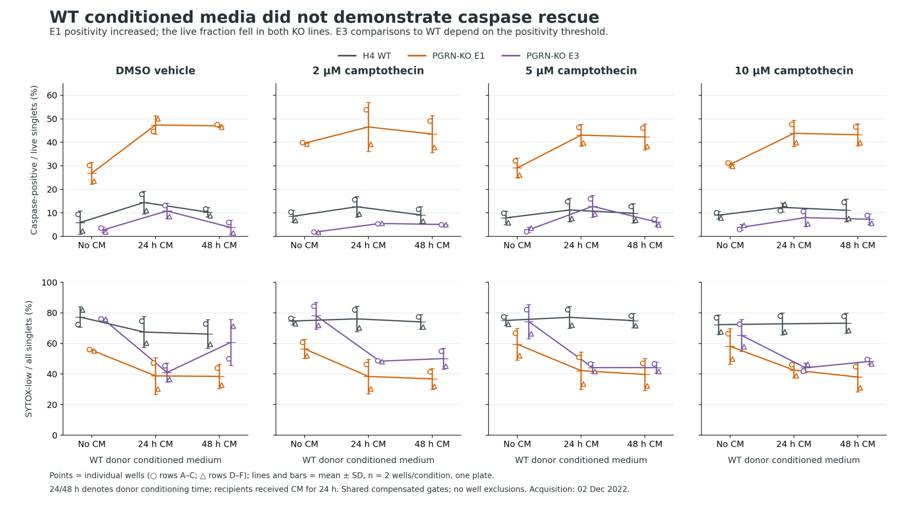
{"chunk_id":"649224","wall_time_seconds":0.00000384,"exit_code":0,"original_token_count":1607,"output":"Flag counts: {('none', 'keep'): 24, ('saturation', 'keep_with_note'): 56}\nCondition summary rows: 42\ncell_line camptothecin conditioned_media untreated_condition treated_condition KO_no_CM KO_CM WT_no_CM WT_CM CM_effect_pp KO_minus_WT_no_CM_pp KO_minus_WT_matched_CM_pp change_in_signed_KO_WT_gap_pp change_in_absolute_KO_WT_gap_pp\n E1 DMSO WT 24hr conditioned media E1 | DMSO | no CM E1 | DMSO | WT CM 24h 26.871 47.365 5.896 14.436 20.494 20.976 32.930 11.954 11.954\n E1 DMSO WT 48hr conditioned media E1 | DMSO | no CM E1 | DMSO | WT CM 48h 26.871 47.012 5.896 10.288 20.140 20.976 36.723 15.747 15.747\n E1 2uM WT 24hr conditioned media E1 | 2uM | no CM E1 | 2uM | WT CM 24h 39.619 46.522 8.557 12.598 6.902 31.063 33.924 2.861 2.861\n E1 2uM WT 48hr conditioned media E1 | 2uM | no CM E1 | 2uM | WT CM 48h 39.619 43.503 8.557 9.121 3.883 31.063 34.382 3.319 3.319\n E1 5uM WT 24hr conditioned media E1 | 5uM | no CM E1 | 5uM | WT CM 24h 29.121 43.056 7.880 11.234 13.936 21.240 31.822 10.582 10.582\n E1 5uM WT 48hr conditioned media E1 | 5uM | no CM E1 | 5uM | WT CM 48h 29.121 42.260 7.880 9.819 13.140 21.240 32.442 11.201 11.201\n E1 10uM WT 24hr conditioned media E1 | 10uM | no CM E1 | 10uM | WT CM 24h 30.590 43.811 9.038 12.346 13.221 21.551 31.465 9.914 9.914\n E1 10uM WT 48hr conditioned media E1 | 10uM | no CM E1 | 10uM | WT CM 48h 30.590 43.217 9.038 11.100 12.627 21.551 32.116 10.565 10.565\n E3 DMSO WT 24hr conditioned media E3 | DMSO | no CM E3 | DMSO | WT CM 24h 2.762 10.815 5.896 14.436 8.053 -3.134 -3.621 -0.487 0.487\n E3 DMSO WT 48hr conditioned media E3 | DMSO | no CM E3 | DMSO | WT CM 48h 2.762 3.783 5.896 10.288 1.021 -3.134 -6.505 -3.372 3.372\n E3 2uM WT 24hr conditioned media E3 | 2uM | no CM E3 | 2uM | WT CM 24h 1.884 5.501 8.557 12.598 3.617 -6.672 -7.097 -0.424 0.424\n E3 2uM WT 48hr conditioned media E3 | 2uM | no CM E3 | 2uM | WT CM 48h 1.884 5.053 8.557 9.121 3.168 -6.672 -4.068 2.604 -2.604\n E3 5uM WT 24hr conditioned media E3 | 5uM | no CM E3 | 5uM | WT CM 24h 2.836 12.786 7.880 11.234 9.950 -5.044 1.552 6.596 -3.493\n E3 5uM WT 48hr conditioned media E3 | 5uM | no CM E3 | 5uM | WT CM 48h 2.836 6.126 7.880 9.819 3.290 -5.044 -3.693 1.352 -1.352\n E3 10uM WT 24hr conditioned media E3 | 10uM | no CM E3 | 10uM | WT CM 24h 3.882 7.983 9.038 12.346 4.101 -5.156 -4.362 0.794 -0.794\n E3 10uM WT 48hr conditioned media E3 | 10uM | no CM E3 | 10uM | WT CM 48h 3.882 7.269 9.038 11.100 3.387 -5.156 -3.831 1.325 -1.325\n<?xml version='1.0' encoding='UTF-8'?>\n<gating:Gating-ML xmlns:gating=\"http://www.isac-net.org/std/Gating-ML/v2.0/gating\" xmlns:data-type=\"http://www.isac-net.org/std/Gating-ML/v2.0/datatypes\" xmlns:transforms=\"http://www.isac-net.org/std/Gating-ML/v2.0/transformations\">\n <transforms:spectrumMatrix transforms:id=\"single_stain_comp\">\n <transforms:fluorochromes>\n <data-type:fcs-dimension data-type:name=\"CellEvent_Caspase_3_7\"/>\n <data-type:fcs-dimension data-type:name=\"SYTOX_AADvanced\"/>\n </transforms:fluorochromes>\n <transforms:detectors>\n <data-type:fcs-dimension data-type:name=\"BL1-A\"/>\n <data-type:fcs-dimension data-type:name=\"BL2-A\"/>\n </transforms:detectors>\n <transforms:spectrum>\ncondition,wells,n_wells_used,mean,sd,metric_definition,normalisation_applied\nWT | 10uM | WT CM 24h,A1;D1,2,12.345521879381327,1.9112899636250424,100 x count(caspase_positive) / count(live); percent of SYTOX-low singlets with compensated BL1-A >= 800,none\nWT | 5uM | WT CM 24h,A2;D2,2,11.234104395496013,5.049701211380312,100 x count(caspase_positive) / count(live); percent of SYTOX-low singlets with compensated BL1-A >= 800,none\nWT | 2uM | WT CM 24h,A3;D3,2,12.598157287259177,4.334923865825657,100 x count(caspase_positive) / count(live); percent of SYTOX-low singlets with compensated BL1-A >= 800,none\nWT | DMSO | WT CM 24h,A4;D4,2,14.435704913876464,4.841135685018377,100 x count(caspase_positive) / count(live); percent of
… [589 more characters not shown]tool call · exec
text(await tools.web__run({open:[{ref_id:"https://assets.thermofisher.com/TFS-Assets/LSG/manuals/cellevent_caspase_3_7_grn_flow_cytometry_assay_kit_man.pdf"},{ref_id:"https://www.thermofisher.com/us/en/home/life-science/cell-analysis/cell-viability-and-regulation/apoptosis/caspase-assays.html"}],response_length:"long"}));
text(await tools.exec_command({cmd:"python - <<'PY'\nimport pandas as pd\nm=pd.read_csv('outputs/well_metrics.csv');r=pd.read_csv('outputs/acquisition_qc.csv')\nprint('Totals',m.all_events.sum(),m.live.min(),m.live.max(),m.singlets.min(),m.singlets.max())\nprint('Raw',m.all_events.min(),m.all_events.max())\nprint('sum clip',r.scatter_clipped_n.sum(),'percent',100*r.scatter_clipped_n.sum()/m.all_events.sum())\na=m[~m.well.str.startswith('G')].groupby(['cell_line','camptothecin','conditioned_media']).live_caspase_pct.agg(['mean','std'])\nprint('CPT effects:')\nfor line in ['WT','E1','E3']:\n for cm in ['no conditioned media','WT 24hr conditioned media','WT 48hr conditioned media']:\n print(line,cm,'10-DMSO',a.loc[(line,'10uM',cm),'mean']-a.loc[(line,'DMSO',cm),'mean'])\nPY","max_output_tokens":2000}));
tool output
Script completed
Wall time 0.9 seconds
Output:
CellEvent Caspase-3/7 Green Flow Cytometry Assay Kit User Guide (Pub.No. MAN0007522 B.0) (https://assets.thermofisher.com/TFS-Assets/LSG/manuals/cellevent_caspase_3_7_grn_flow_cytometry_assay_kit_man.pdf)
citeturn3view0 [wordlim: 200] Crawled: yesterday; Content type: application/pdf; Number of pages: 4; Source: open({"ref_id":"https://assets.thermofisher.com/TFS-Assets/LSG/manuals/cellevent_caspase_3_7_grn_flow_cytometry_assay_kit_man.pdf","lineno":null}); Total lines: 150
L0@P0: CellEvent™ Caspase-3/7 Green Flow Cytometry Assay Kit
L1@P0: Catalog Numbers C10427, C10740
L2@P0: Pub. No. MAN0007522 Rev. B.0
L3@P0: WARNING! Read the Safety Data Sheets (SDSs) and follow the handling instructions. Wear appropriate protective eyewear,
L4@P0: clothing, and gloves. Safety Data Sheets (SDSs) are available from thermofisher.com/support.
L5@P0: Product description
L6@P0: A distinctive feature of the early stages of apoptosis is the activation of caspase enzymes, which are cysteine-aspartic acid-specific
L7@P0: proteases. These enzymes participate in a series of reactions triggered in response to pro-apoptotic signals and result in the cleavage of
L8@P0: protein substrates and subsequent cell disassembly. The recognition sequence in the target substrate always includes an aspartic acid
L9@P0: residue; cleavage takes place at the carbonyl end of that residue.
L10@P0: CellEvent™ Caspase-3/7 Green Detection Reagent is a fluorogenic substrate for detection of activated caspases 3 and 7 in apoptotic
L11@P0: cells. This cell-permeant reagent consists of a 4 amino acid peptide (DEVD) conjugated to a nucleic acid binding dye. During apoptosis,
L12@P0: caspase-3 and caspase-7 proteins are activated and are able to cleave the caspase 3/7 recognition sequence encoded in the DEVD
L13@P0: peptide. Cleavage of the recognition sequence and binding of DNA by the reagent labels apoptotic cells with a bright, fluorogenic signal.
L14@P0: When used together with the SYTOX™ AADvanced™ Dead Cell Stain, apoptotic cells can easily be discriminated from live and necrotic
L15@P0: cells (see Figure 1).
L16@P0: Figure 1 Flow cytometry analysis with the CellEvent™ Caspase-3/7 Green Flow Cytometry Assay Kit.
L17@P0: Jurkat cells (T-cell leukemia, human) were treated with (A) DMSO or (B) 10 µM camptothecin for 3 hours before labeling with the CellEvent™
L18@P0: Caspase-3/7 Green Flow Cytometry Assay Kit. Stained samples were analyzed on the Attune™ Acoustic Focusing Cytometer equipped with a
L19@P0: 488‑nm laser, and fluorescence emission was collected using a 530/30 bandpass filter for CellEvent™ Caspase-3/7 Green Detection Reagent and
L20@P0: a 690/50 bandpass filter for SYTOX™ AADvanced™ Dead Cell Stain, respectively. Note that the treated cells have a higher percentage of apoptotic
L21@P0: cells (panel B) than the basal level of apoptosis seen in the control cells (panel A). A = apoptotic cells, V = viable cells, N = necrotic cells.
L22@P0: Because no single parameter defines apoptosis in all systems, we strongly suggest using a combination of different measurements for
L23@P0: reliable detection of apoptosis. Thermo Fisher Scientific offers a wide selection of products for apoptosis research; for more information,
L24@P0: refer to http://thermofisher.com/apoptosis.
L25@P0: Spectral characteristics
L26@P0: The absorption and fluorescence emission spectra of the CellEvent™ Caspase-3/7 Green Detection Reagent following cleavage of the
L27@P0: DEVD peptide sequence and SYTOX™ AADvanced™ Dead Cell Stain are given in Figure 2 (panels A and B, respectively). These spectra
L28@P0: were obtained in 10 mM Tris, 1 mM EDTA, pH 8 in the presence of double-stranded DNA. The CellEvent™ Caspase-3/7 Green Detection
L29@P0: Reagent exhibits greater than a 30‑fold increase upon cleavage and binding DNA. Similarly, the SYTOX™ AADvanced™ Dead Cell Stain
L30@P0: exhibits a fluorescence enhancement of greater than 500‑fold. The absorption and fluorescence emission maxima of the CellEvent™
L31@P0: reagent/DNA and SYTOX™ AADvanced™ stain/DNA complexes are 511 nm/533 nm and 546 nm/647 nm, respectively.
L32@P0: USER GUIDE
L33@P0-1: For Research Use Only. Not for use in diagnostic procedures.Figure 2 Spectra for the CellEvent™ Caspase-3/7 Green Flow Cytometry Assay Kit.
L34@P1: Fluorescence excitation and emission spectra of the (A) CellEvent™ Caspase-3/7 Green Detection Reagent following cleavage of the DEVD peptide
L35@P1: sequence and (B) SYTOX™ AADvanced™ Dead Cell Stain, bound to DNA.
L36@P1: Contents and storage
L37@P1: Component
L38@P1: Amount
L39@P1: Concentration Storage[1]
L40@P1: Cat. No. C10427 Cat. No. C10740
L41@P1: CellEvent™ Caspase-3/7
L42@P1: Green Detection Reagent
L43@P1: (Component A)
L44@P1: 100 tests 20 tests 500 µM
L45@P1: ≤–20°C
L46@P1: Desiccate
L47@P1: Store vial upright
L48@P1: Protect from light
L49@P1: SYTOX™ AADvanced™ Dead
L50@P1: Cell Stain
L51@P1: (Component B)
L52@P1: 100 tests 20 tests 1 mM[2]
L53@P1: Dimethylsulfoxide (DMSO)
L54@P1: (Component C)
L55@P1: 200 µL 200 µL Not applicable
L56@P1: Number of reactions: Sufficient material is supplied for 100 reactions (Cat. No. C10427) or 20 reactions (Cat. No. C10740) based on the protocol
L57@P1: “Stain cells with CellEvent™ Caspase-3/7 Green Flow Cytometry Assay Kit” on page 2.
L58@P1: Approximate fluorescence excitation and emission maxima (bound to DNA): CellEvent™ Caspase-3/7 Green Detection Reagent = approximately
L59@P1: 511/533 nm; SYTOX™ AADvanced™ Dead Cell Stain = 546/647 nm (see Figure 2).
L60@P1: [1] When stored as directed, kit components are stable for at least 1 year.
L61@P1: [2] When reconstituted with DMSO. Before refreezing, tightly seal the vial.
L62@P1: Before you begin
L63@P1: Required materials not supplied
L64@P1: • Cells of interest in single-cell suspension (appropriate sample concentrations range from 1 × 105 to 1 × 107 cells/mL)
L65@P1: • Appropriate suspension buffer (e.g., phospha
… [21,909 more characters not shown]tool call · exec
text(await tools.apply_patch("*** Begin Patch\n*** Add File: /task/outputs/write_report.py\n+\"\"\"Write the interpretation and machine-readable answer from the final summaries.\"\"\"\n+from pathlib import Path\n+import json\n+import pandas as pd\n+\n+OUT=Path('/task/outputs')\n+s=pd.read_csv(OUT/'condition_summary.csv').set_index('condition')\n+m=pd.read_csv(OUT/'well_metrics.csv')\n+effects=pd.read_csv(OUT/'rescue_comparisons.csv')\n+media=['no CM','WT CM 24h','WT CM 48h']\n+doses=['DMSO','2uM','5uM','10uM']\n+def name(line,dose,cm):return f'{line} | {dose} | {cm}'\n+def mean(line,dose,cm):return float(s.loc[name(line,dose,cm),'mean'])\n+def show(line,dose,cm):\n+ r=s.loc[name(line,dose,cm)]\n+ return f'{r[\"mean\"]:.2f} ± {r[\"sd\"]:.2f}'\n+\n+question='Can WT progranulin-conditioned media (24 h or 48 h donor collections, applied to recipients for 24 h) bring caspase-3/7 activity in H4 PGRN-KO E1 and E3 toward H4 WT levels on the plate acquired 02-Dec-2022?'\n+comparisons=[]\n+def comparison(title,a,b,confidence='low',unclear=False):\n+ av,bv=float(s.loc[a,'mean']),float(s.loc[b,'mean'])\n+ comparisons.append(dict(comparison=title,a=a,b=b,\n+ direction='no_clear_change' if unclear else ('increase' if bv>av else 'decrease' if bv<av else 'no_clear_change'),\n+ magnitude=f'b - a = {bv-av:+.2f} percentage points ({av:.2f}% to {bv:.2f}% caspase-positive/live; 2 wells per condition)',confidence=confidence))\n+for line in ['E1','E3']:\n+ for dose in doses:\n+ comparison(f'{line} versus WT without conditioned media, {dose}',\n+ name('WT',dose,'no CM'),name(line,dose,'no CM'),'medium' if line=='E1' else 'low')\n+ for cm in media[1:]:\n+ unclear=(line=='E1' and dose=='2uM') or (line=='E3' and dose=='DMSO' and cm=='WT CM 48h')\n+ comparison(f'Effect of {cm} on {line}, {dose}',\n+ name(line,dose,'no CM'),name(line,dose,cm),\n+ 'medium' if line=='E1' and dose!='2uM' else 'low',unclear)\n+ comparison(f'{line} versus WT under matched {cm}, {dose}',\n+ name('WT',dose,cm),name(line,dose,cm),'medium' if line=='E1' else 'low')\n+\n+next_change={\n+ 'what':'Camptothecin exposure duration and validation of the H4 response window',\n+ 'from':'DMSO or 2, 5, 10 uM camptothecin; challenge incubation duration was not recorded.',\n+ 'to':'Pilot DMSO and 2, 5, 10 uM camptothecin for explicitly timed 3, 6 and 16 h in H4 WT, E1 and E3; select a reproducible, non-terminal response window before repeating the conditioned-media study.',\n+ 'why':'The plate lacks a consistent camptothecin dose response: 10 uM minus DMSO is -2.09, -3.55 and -2.83 percentage points in WT, E1 and E3 with 24 h CM. E3 versus WT is also positivity-threshold dependent. A validated response window is needed to interpret rescue.'}\n+caveats=[\n+ 'One plate with two nominal replicate wells per experimental condition; independent culture and donor-media replication is not documented. Events are not biological replicates.',\n+ 'The final 02-Dec map and supplied colour-derived layout were used; earlier maps differ. G7/G8 camptothecin treatment is not stated and was not assumed to be absent.',\n+ 'Primary endpoint is caspase-positive as a percentage of SYTOX-low singlets, not an enzyme activity rate. Loss of membrane-compromised cells changes the denominator; total singlet positivity and live fraction were also examined.',\n+ 'E3 versus WT changes sign with the BL1 positivity threshold; at 10 uM without CM, E3-WT is -5.16 percentage points at BL1 >= 800 but +4.96 at BL1 >= 400 (BL2 live cutoff fixed at 5000).',\n+ 'Only WT unstained and single-stain controls are available. KO- and CM-specific autofluorescence and inhibitor-sensitive caspase signal were not established.',\n+ 'Acquisition ran from 14:33:37 to 15:32:30 (58 min 53 s) on unfixed cells; stain-to-read timing and camptothecin exposure duration are not specified. Order is confounded with plate position and condition.',\n+ 'FSC-A or SSC-A clipping affects 0.263-9.448% of events per well. These events were removed uniformly. No BL1-A saturation occurred; recovery of large cells or aggregates may differ by line.',\n+ 'The protocol aspirated medium before harvesting adherent cells, potentially losing detached apoptotic/dead cells. The recorded FSC trigger and morphology gate may also miss small dying cells.',\n+ 'PGRN concentration, conditioned-media fraction and composition, donor batch independence, and a PGRN-negative conditioned-media control are not documented. Whole conditioned-media effects cannot be assigned specifically to progranulin.',\n+ 'A12/D12 and C8/F8 have substantial duplicate disagreement; all were retained because there is no independent evidence of mislabelling or acquisition failure.'\n+]\n+answer=dict(question=question,comparisons=comparisons,\n+ overall_answer='no: This plate does not demonstrate restoration of elevated KO caspase activity by WT conditioned media. E1 moves farther from matched WT; E3 has a threshold-dependent baseline and no consistent rescue pattern. Both KO lines lose SYTOX-low cells with conditioned media. The biological conclusion remains provisional.',\n+ assay_verdict='needs_optimisation',next_action='change_treatment_or_timing',next_change=next_change,\n+ excluded_wells=[],caveats=caveats)\n+(OUT/'answer.json').write_text(json.dumps(answer,indent=2,ensure_ascii=False)+'\\n')\n+\n+table='| Cell line | Camptothecin | No CM | WT CM 24 h | WT CM 48 h |\\n|---|---|---:|---:|---:|\\n'\n+for line in ['WT','E1','E3']:\n+ for dose in doses:\n+ table+=f'| {line} | {dose.replace(\"uM\",\" µM\")} | '+ ' | '.join(show(line,dose,cm) for cm in media)+' |\\n'\n+\n+report=f'''## Question\n+\n+{question}\n+\n+**Answer: no demonstrated rescue on this plate.** E1 caspase positivity increased with conditioned media and moved farther from matched WT. E3 did not provide a stable e
… [15,572 more characters not shown]tool output
Script completed
Wall time 0.2 seconds
Output:
{}
{"chunk_id":"df604b","wall_time_seconds":0.048950296,"exit_code":0,"original_token_count":13,"output":"Wrote report.md and answer.json with 40 comparisons\n"}24
agent
The main result holds across broader and narrower gates: conditioned media does not reduce the E1 signal. E3’s comparison with WT changes when the positivity threshold changes, so I’ve treated that result as uncertain. All wells are retained, with notes for scatter clipping and duplicate disagreement. I’m finishing the report and checking that the saved XML reproduces every reported count.
tool call · exec
text(await tools.apply_patch("*** Begin Patch\n*** Add File: /task/outputs/plot_gating.py\n+\"\"\"Save reviewable views of the actual shared, exported gates.\"\"\"\n+from pathlib import Path\n+import numpy as np\n+import pandas as pd\n+import flowkit as fk\n+import matplotlib\n+matplotlib.use('Agg')\n+import matplotlib.pyplot as plt\n+from matplotlib.colors import LogNorm\n+from matplotlib.patches import Rectangle, Polygon\n+\n+OUT=Path('/task/outputs')\n+layout=pd.read_csv('/task/inputs/plate_layout.csv')\n+gs=fk.parse_gating_xml(str(OUT/'gates.xml'))\n+samples={};pool=[];pool_cells=[]\n+rng=np.random.default_rng(20221202)\n+for rec in layout.to_dict('records'):\n+ s=fk.Sample('/task/inputs/raw/'+rec['file']);x=s.get_events(source='raw');r=gs.gate_sample(s)\n+ xc=gs.get_comp_matrix('single_stain_comp').apply(s)\n+ samples[rec['well']]=(s,x,xc,r)\n+ if not rec['well'].startswith('G'):\n+ # Equal subsampling per well is for display only; counts use every event.\n+ pool.append(x[rng.choice(len(x),2000,replace=False)])\n+ cells=x[r.get_gate_membership('cells')]\n+ pool_cells.append(cells[rng.choice(len(cells),2000,replace=False)])\n+pool=np.concatenate(pool);pool_cells=np.concatenate(pool_cells)\n+plt.rcParams.update({'font.size':10,'axes.spines.top':False,'axes.spines.right':False})\n+fig,axs=plt.subplots(2,3,figsize=(16,10))\n+ax=axs[0,0]\n+ax.hist2d(pool[:,1]/1e3,pool[:,2]/1e3,bins=140,range=[[-30,1100],[-30,1100]],norm=LogNorm())\n+ax.add_patch(Rectangle((60,40),1048.575-60,1048.575-40,fill=False,edgecolor='#D55E00',lw=1.5))\n+ax.set_title('Cells: broad scatter gate, all conditions');ax.set_xlabel('FSC-A / 1000');ax.set_ylabel('SSC-A / 1000')\n+ax=axs[0,1]\n+ax.hist2d(pool_cells[:,1]/1e3,pool_cells[:,5]/1e3,bins=140,range=[[0,1100],[0,1000]],norm=LogNorm())\n+vertices=np.array([[60000,24000],[1048575,419430],[1048575,943717.5],[60000,54000]])/1000\n+ax.add_patch(Polygon(vertices,fill=False,edgecolor='#D55E00',lw=1.5))\n+ax.set_title('Singlets: 0.40–0.90 FSC-H / FSC-A');ax.set_xlabel('FSC-A / 1000');ax.set_ylabel('FSC-H / 1000')\n+\n+for ax,w,title in zip([axs[0,2],axs[1,0],axs[1,1],axs[1,2]],['G1','G7','G8','E4'],\n+ ['G1: unstained WT','G7: caspase-only WT','G8: dead-stain-only WT','E4: E1, DMSO, 24 h CM']):\n+ s,x,xc,r=samples[w];m=r.get_gate_membership('singlets')\n+ ax.hist2d(np.arcsinh(xc[m,3]/150),np.arcsinh(xc[m,4]/150),bins=100,\n+ range=[[-2,10],[-3,10]],norm=LogNorm())\n+ ax.axvline(np.arcsinh(800/150),color='#D55E00',lw=1.5)\n+ ax.axhline(np.arcsinh(5000/150),color='#D55E00',lw=1.5)\n+ ticks=np.array([-1000,0,1000,10000,100000,1000000])\n+ ax.set_xticks(np.arcsinh(ticks/150),['−1k','0','1k','10k','100k','1M'])\n+ ax.set_yticks(np.arcsinh(ticks/150),['−1k','0','1k','10k','100k','1M'])\n+ ax.set_xlim(-2,10);ax.set_ylim(-3,10)\n+ ax.set_xlabel('Compensated BL1-A: caspase');ax.set_ylabel('Compensated BL2-A: SYTOX')\n+ ax.set_title(f'{title}\\n{r.get_gate_count(\"caspase_positive\")}/{r.get_gate_count(\"live\")} positive/live')\n+ ax.text(.98,.03,'marker_positive',transform=ax.transAxes,ha='right',va='bottom',fontsize=9,color='#D55E00')\n+fig.suptitle('Shared gates used in gates.xml and counts.csv',fontsize=18,fontweight='bold',y=.99)\n+fig.text(.05,.025,'Scatter panels: 2,000 events per experimental well for display. Fluorescence panels: all singlets in each well; asinh display, linear gate values.',fontsize=10)\n+fig.tight_layout(rect=[0,.05,1,.95]);fig.savefig(OUT/'gating_overview.png',dpi=180);plt.close(fig)\n+\n+fig,axs=plt.subplots(7,12,figsize=(30,19))\n+for ax in axs.ravel():ax.set_visible(False)\n+for rec in layout.to_dict('records'):\n+ w=rec['well'];ax=axs[ord(w[0])-65,int(w[1:])-1];ax.set_visible(True)\n+ s,x,xc,r=samples[w];m=r.get_gate_membership('singlets')\n+ ax.hist2d(np.arcsinh(xc[m,3]/150),np.arcsinh(xc[m,4]/150),bins=65,\n+ range=[[-2,10],[-3,10]],norm=LogNorm())\n+ ax.axvline(np.arcsinh(800/150),color='red',lw=.6)\n+ ax.axhline(np.arcsinh(5000/150),color='red',lw=.6)\n+ ax.set_title(f'{w}: {100*r.get_gate_count(\"caspase_positive\")/r.get_gate_count(\"live\"):.2f}% +/live',fontsize=9)\n+ ax.tick_params(labelsize=6)\n+fig.suptitle('All wells: compensated BL1-A (x) versus BL2-A (y), singlets; common asinh axes',fontsize=17)\n+fig.tight_layout(rect=[0,0,1,.97]);fig.savefig(OUT/'plate_gated_fluorescence.png',dpi=150);plt.close(fig)\n*** Add File: /task/outputs/validate_outputs.py\n+\"\"\"Replay the saved gates for all files and verify all required output contracts.\"\"\"\n+from pathlib import Path\n+import hashlib\n+import json\n+import re\n+import sys\n+import numpy as np\n+import pandas as pd\n+import flowkit as fk\n+from lxml import etree\n+\n+ROOT=Path('/task');OUT=ROOT/'outputs'\n+l=pd.read_csv(ROOT/'inputs/plate_layout.csv')\n+c=pd.read_csv(OUT/'counts.csv',keep_default_na=False)\n+f=pd.read_csv(OUT/'flags.csv',keep_default_na=False)\n+s=pd.read_csv(OUT/'condition_summary.csv')\n+a=json.loads((OUT/'answer.json').read_text())\n+assert c.columns.tolist()==['file','well','population','role','parent','count','pct_of_parent']\n+assert f.columns.tolist()==['file','well','issue_type','evidence','decision']\n+assert s.columns.tolist()==['condition','wells','n_wells_used','mean','sd','metric_definition','normalisation_applied']\n+assert len(l)==80 and len(f)==80\n+assert set(c.file)==set(l.file)==set(f.file)\n+assert not c.duplicated(['file','population']).any()\n+assert not f.duplicated('file').any()\n+assert c['count'].dtype.kind in 'iu'\n+assert (c['count']>=0).all()\n+assert set(c.role)<=set(['cells','singlets','live','marker_positive','other'])\n+for role in ['cells','singlets','live','marker_positive']:\n+ assert c[c.role==role].population.nunique()==1\n+ assert len(c[c.role==role])==80\n+assert set(f.issue_type)<=set(['none','clog','ran_dry','too_few_events','saturation','bad_control','mislabel','other'])\n+assert set(f.decision)<=se
… [5,220 more characters not shown]tool output
Script completed
Wall time 1.2 seconds
Output:
{}
{"chunk_id":"976ea4","wall_time_seconds":1.001029095,"session_id":96662,"original_token_count":0,"output":""}tool call · exec
text(await tools.write_stdin({session_id:96662,chars:"","yield_time_ms":1000,"max_output_tokens":1000}));
const r=await tools.view_image({path:"/task/outputs/gating_overview.png"});image(r.image_url);
text(await tools.exec_command({cmd:"python outputs/validate_outputs.py","yield_time_ms":1000,"max_output_tokens":2000}));
tool output
Script completed Wall time 1.2 seconds Output:
{"chunk_id":"69ca0a","wall_time_seconds":0.00000287,"exit_code":0,"original_token_count":0,"output":""}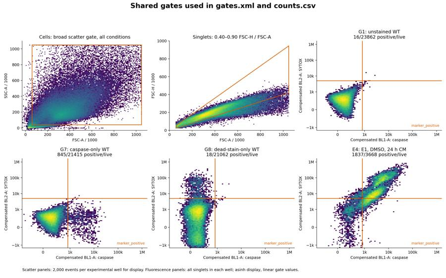
{"chunk_id":"a2b57f","wall_time_seconds":1.001115955,"session_id":70109,"original_token_count":0,"output":""}tool call · exec
text(await tools.write_stdin({session_id:70109,chars:"","yield_time_ms":1000,"max_output_tokens":2000}));
const r=await tools.view_image({path:"/task/outputs/plate_gated_fluorescence.png"});image(r.image_url);
text(await tools.exec_command({cmd:"ls -lh outputs; python - <<'PY'\nimport pandas as pd\nc=pd.read_csv('outputs/counts.csv');f=pd.read_csv('outputs/flags.csv');s=pd.read_csv('outputs/condition_summary.csv')\nprint('Counts:',len(c),'files:',c.file.nunique(),'populations:',c.population.unique().tolist())\nprint('Summary SD blanks:',s[s.sd.isna()][['condition','n_wells_used']].to_string(index=False))\nprint('Excluded:',f.loc[f.decision=='exclude','well'].tolist())\nPY","max_output_tokens":2500}));
tool output
Script completed Wall time 0.3 seconds Output:
{"chunk_id":"038033","wall_time_seconds":0.00000327,"exit_code":0,"original_token_count":137,"output":"{\n \"status\": \"passed\",\n \"flowkit_version\": \"1.2.3\",\n \"python_version\": \"3.12.16\",\n \"fcs_files_replayed\": 80,\n \"gates_per_file\": 8,\n \"count_rows_verified\": 640,\n \"flag_rows_verified\": 80,\n \"condition_summary_rows_verified\": 42,\n \"answer_comparisons_verified\": 40,\n \"excluded_wells\": [],\n \"counts_match_fresh_parse_gating_xml_replay\": true,\n \"percentages_means_and_sample_sds_verified\": true,\n \"all_required_schemas_and_roles_verified\": true,\n \"gates_xml_sha256\": \"d5959e83cef9895bb5bc66a17b62e2e3bc9f823331b5d5b9071be10b54a98708\"\n}\n"}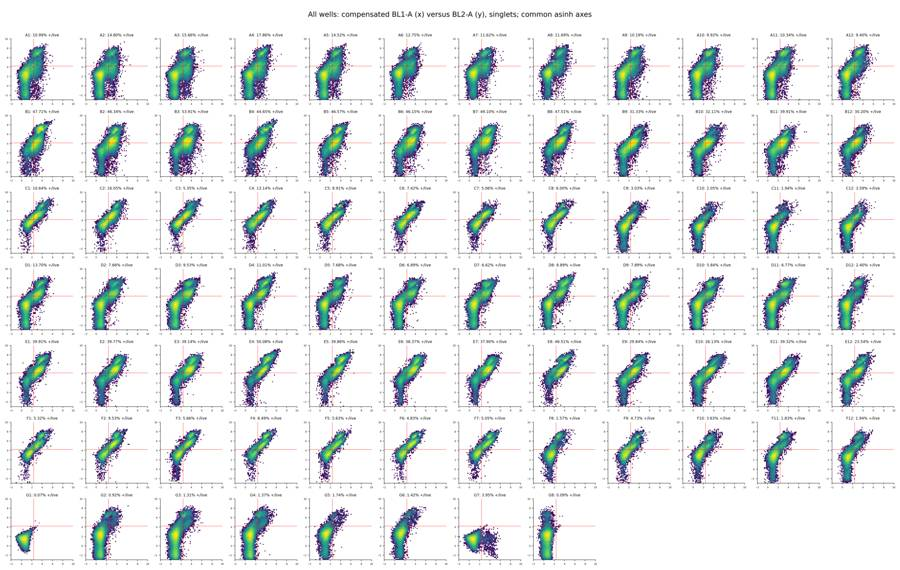
{"chunk_id":"82e664","wall_time_seconds":0.057871307,"exit_code":0,"original_token_count":714,"output":"total 6.6M\n-rw-r--r-- 1 root root 27K Nov 10 17:12 acquisition_qc.csv\n-rw-r--r-- 1 root root 122K Nov 10 17:12 acquisition_time_bins.csv\n-rw-r--r-- 1 root root 8.0K Nov 10 17:11 analyse.py\n-rw-r--r-- 1 root root 16K Nov 10 17:20 answer.json\n-rw-r--r-- 1 root root 271K Nov 10 17:11 compensated_controls.png\n-rw-r--r-- 1 root root 819 Nov 10 17:11 compensation.json\n-rw-r--r-- 1 root root 7.4K Nov 10 17:16 condition_summary.csv\n-rw-r--r-- 1 root root 104K Nov 10 17:11 control_histograms.png\n-rw-r--r-- 1 root root 4.6K Nov 10 17:11 control_statistics.csv\n-rw-r--r-- 1 root root 59K Nov 10 17:11 counts.csv\n-rw-r--r-- 1 root root 399K Nov 10 17:16 figure.png\n-rw-r--r-- 1 root root 17K Nov 10 17:16 flags.csv\n-rw-r--r-- 1 root root 1.4K Nov 10 17:09 gate_exploration.py\n-rw-r--r-- 1 root root 4.1K Nov 10 17:11 gates.xml\n-rw-r--r-- 1 root root 324K Nov 10 17:21 gating_overview.png\n-rw-r--r-- 1 root root 7.9K Nov 10 17:11 gating_run.log\n-rw-r--r-- 1 root root 3.4K Nov 10 17:09 inspect_data.py\n-rw-r--r-- 1 root root 147K Nov 10 17:09 inspection_controls_linear.png\n-rw-r--r-- 1 root root 543K Nov 10 17:09 inspection_fluorescence.png\n-rw-r--r-- 1 root root 705K Nov 10 17:09 inspection_scatter.png\n-rw-r--r-- 1 root root 1.2M Nov 10 17:09 inspection_selected.png\n-rw-r--r-- 1 root root 180K Nov 10 17:09 inspection_singlets.png\n-rw-r--r-- 1 root root 397K Nov 10 17:09 inspection_time.png\n-rw-r--r-- 1 root root 613K Nov 10 17:21 plate_gated_fluorescence.png\n-rw-r--r-- 1 root root 4.2K Nov 10 17:21 plot_gating.py\n-rw-r--r-- 1 root root 4.8K Nov 10 17:12 qc_and_sensitivity.py\n-rw-r--r-- 1 root root 5.4K Nov 10 17:12 qc_run.log\n-rw-r--r-- 1 root root 1.1M Nov 10 17:12 qc_time_scatter.png\n-rw-r--r-- 1 root root 84K Nov 10 17:09 raw_qc.csv\n-rw-r--r-- 1 root root 17K Nov 10 17:20 report.md\n-rw-r--r-- 1 root root 4.0K Nov 10 17:16 rescue_comparisons.csv\n-rw-r--r-- 1 root root 33K Nov 10 17:16 secondary_summary.csv\n-rw-r--r-- 1 root root 226K Nov 10 17:12 sensitivity.csv\n-rw-r--r-- 1 root root 9.0K Nov 10 17:16 summarise.py\n-rw-r--r-- 1 root root 4.3K Nov 10 17:16 summary_run.log\n-rw-r--r-- 1 root root 6.2K Nov 10 17:21 validate_outputs.py\n-rw-r--r-- 1 root root 9.7K Nov 10 17:21 validation.json\n-rw-r--r-- 1 root root 21K Nov 10 17:16 well_metrics.csv\n-rw-r--r-- 1 root root 21K Nov 10 17:20 write_report.py\nCounts: 640 files: 80 populations: ['all_events', 'cells', 'singlets', 'live', 'caspase_positive', 'dead', 'dead_caspase_positive', 'all_singlet_caspase_positive']\nSummary SD blanks: condition n_wells_used\n WT | unstained control | no treatment 1\n WT | no treatment | dual stain 1\n WT | caspase-only control | treatment not stated 1\nWT | dead-stain-only control | treatment not stated 1\nExcluded: []\n"}27
agent
**No demonstrated rescue.** At 10 µM camptothecin, E1 caspase positivity increased from **30.6%** without CM to **43.8% / 43.2%** with 24 h / 48 h CM. E3’s interpretation depended on the positivity threshold.
**Next step:** validate a defined camptothecin dose–time window before repeating the rescue experiment.
All seven required files are saved in `/task/outputs`. No wells were excluded; reloaded gates reproduced all **640 counts across 80 files**.
[Report](/task/outputs/report.md) · [Figure](/task/outputs/figure.png) · [Answer JSON](/task/outputs/answer.json)
[Gates](/task/outputs/gates.xml) · [Counts](/task/outputs/counts.csv) · [Flags](/task/outputs/flags.csv) · [Condition summary](/task/outputs/condition_summary.csv)